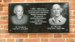
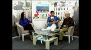
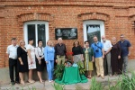
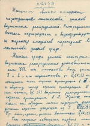

Страницы авторов "Тёмного леса"
Пишите нам! temnyjles@narod.ru
Неожидано для нас троих, у меня и моих братьев, Виталия и Пьера, летом 2018 года завязалась переписка, инициированная Леонидом Трахтенбергом, пенсионером и бывшим учителем математики из украинского города Винница. Переписка касалась чествования памяти моего отца, Давида Мильмана, и его друга детства, Израиля Гельфанда. В адресаты были включены, кроме нас, Александр Вышневецкий (как я понимаю, израильский гражданин), Лариса Шабельник (украинский журналист) и Алина Воевода (дочь Леонида, доцент кафедры математики Винницкого университета). Это Александр Вышневецкий обратил внимание Леонида на двух выдающихся математиков XX века родом из Винницкой области, моего отца Давида и его друга Израиля, и помог Леониду связаться с сыном Давида, Виталием, израильтянином. Лариса Шабельник за 5-6 лет до описываемых событий уже была на связи и с Виталием, и с Вышневецким, и написала статью о моем отце в газету Чечельника (небольшого городка Винничины) о родившемся там математике Давиде Мильмане. А Алина Воевода в силу своей профессии сразу заинтересовалась обнаруженными фактами. Переписка продолжалась довольно интенсивно, обсуждалась живая история, с одной стороны математики, с другой стороны Винничины. Леонид, Лариса и Алина готовили собственно чествование, включавшее предварявшую статью их троих, открытие мемориальной доски в Чечельнике, встречу в Винницком университете, выступление по Винницкому телевидению и поездку в Чечельник, а также в Ольгополь, где до встречи с Давидом Мильманом жил Гельфанд. Это всего лишь вступление, и позже я расскажу об этом очень достойно устроенном жителями Украины чествовании, а теперь главное: кусочек истории математики и Украины (Винничины).
Израиль Моисеевич Гельфанд и Давид Пинхусович Мильман, оба прочно вошедшие в мировую математику своими выдающимися исследованиями; что-то из рассказываемого полулегенды, что-то факты, но, что и как дошло до меня, то и расскажу. Мой отец родился в еврейском местечке Чечельник на границе Винницкой и Одесской областей, тогда, вероятно, губерний. Чечельник в особенности, но и весь прилегающий к нему район, например, Ольгополь, были плотно заселены еврейским населением; Чечельник так просто именовали еврейским местечком, не знаю именовали ли так Ольгополь. Точная дата рождения моего отца по общепринятым в мире христианским календарям по-разному указывается его детьми: старший, Виталий, относит ее к 1913-ому году, а средний, Пьер - к 1912-ому. Дело в том, что у евреев даты традиционно отсчитываются от особых дней еврейского лунного календаря, которые, конечно, в соотношении с солнечными христианскими датами "плавают". Рожден был папа в последнюю субботу перед еврейской Пасхой (Песахом), а занятным действом регистратора записан был неким условным образом в тогдашнем ("старом") стиле христианского календаря, который после этого поменялся декретом на другой ("новый") стиль; он был записан рожденным первого января, то есть первым днем года - только вот в какой именно из двух сопряженных с этим днем лет, поди теперь разбери. Никак иначе, кроме как традиционно еврейски, его рождение и не могло быть отмечено, ведь он родился у дочери Чечельницкого раввина и даяна, то есть традиционного судьи местечка (коего фамилия была Галант). А отец папы был... сапожником. Израиль Гельфанд родился в 1913-ом году, так что их с Давидом можно считать более или менее ровесниками, в Красных Окнах, позже семья перебралась в Ольгополь, родился в семье бухгалтера, позже ставшего мельником. Отец Израиля послал мальчика жить у отца Давида, чтоб тот, как и Давид, мог посещать незадолго до того открытое при сахарном заводе Чечельника химическое профтехучилище. В течение то ли двух, то ли пяти лет этой их совместной учебы и жизни под одной крышей они, естественно, подружились. Выяснилось, что оба мальчика наиболее активно вовлекали себя в математические занятия. Гельфанд позже вспоминал с благодарностью замечательного по его словам учителя математики этого училища, некоего Титаренко. А мой отец мне рассказывал, что их главным развлечением было давать друг другу ими же и придумываемые математические задачки, чтоб другой их решал. Однако, погружая теперь наше повествование в характерные обстоятельства молодого Советского государства: оба были исключены из училища, как дети нетрудовых элементов. Что, между прочим, и хорошо, потому что теперь оба уже знали, чем они, собственно, сами хотят заниматься, чем оба и занялись почти немедленно. Только у каждого был свой особенный характер, что и определило сильно разнящиеся их последующие пути/судьбы. Гельфанд направился к каким-то своим родственникам в Москву и нанялся вахтером в библиотеку Московского университета. Там его заметил за чтением книг по высшей математике уже тогда известный математик, А.Н.Колмогоров. Он дал Гельфанду несколько задач и достаточно быстро получил от Израиля решение их всех, включая задачу, решение которой до того не было известно. Тогда, невзирая на то, что девятнадцатилетний подросток не имел за плечами ни оконченного среднего образования, ни, тем более, лет обучения в Университете, Колмогоров взял его к себе в аспирантуру. Соответственно, в этом возрасте он и стал преподавать в Университете. Все это определило дальнейшую весьма счастливую судьбу Гельфанда. У моего отца все обстояло значительно хуже. Не считая брата и сестер, направивших свои стопы за границу, последовательно в направлении Палестины, где они, добравшись, и попали в число создателей государства Израиль - брат, Бенцион, стал правой рукой (по вопросам строительства) израильского министра Голды Меир, и, по условиям Советского Союза, общение с ними почти прекратилось, семья его отца, он сам, его младший брат, Володя, отец и мать, перебралась в Одессу. Папа сначала вынужден был работать. Я помню кое-что из его рассказов о работе на конфетной фабрике. Затем он поступил, по-моему, на второй курс то ли вечернего, то ли заочного отделения Университета по математике, где, по-моему, отучился лишь два года, и стал поступать в аспирантуру к главе тогдашней (и в течение всей его жизни там) математической школы в Одессе, Марку Григорьевичу Крейну (семинар Крейна в Одессе имел то же самое значение для математиков Одессы, что и для московских математиков семинар Гельфанда в Москве). Однако, его ждало второе в его жизни характерное столкновение с особенностями Советской власти; на этот раз сильно расстроившее его. Администрация отклонила кандидатуру сына нетрудового элемента. Тогда Крейн послал его попытать счастья в Харькове, где его в аспирантуру приняли, и там он стал рассказывать тамошним математикам новую в то время ветвь математики уже мощно подхваченную в Одессе - функциональный анализ. Но недолго. Письмо о том, что он внук раввина и сын бывшего нэповца, то есть нетрудового элемента, через несколько месяцев настигло его в Харькове, и администрация Харькова тоже отчислила его из аспирантуры. То, что после этого папа вернувшись в Одессу сделал, очень точно описывает особенности его характера, и по правилам жизни в молодом Советском государстве должно было ему стоить последующей отсылки в сталинские лагеря, но волею судеб, по-видимому наоборот, в дальнейшем послужило защитой его необычному характеру: папа... написал письмо Сталину. В нем он говорил, что ничего, кроме математики, не умеет делать, и, если ему не дадут заниматься математикой, то он будет бесполезен обществу. Случилось чудо - в обком партии пришел ответ от Сталина (не знаю кем написанный), в котором он недвусмысленно "рекомендовал" утвердить папу в аспирантуре.
Не будучи сам профессиональным математиком, я лишь приблизительно могу говорить о роли папы в математике, а о Гельфанде только скажу, что он, по-видимому, считается основным создателем теории нормированных колец и сыграл большую роль в теории представлений, и что своей активностью и очень экстравертным характером он был катализатором многих математических (и не только) идей и их дальнейших разработок, в чем огромную роль играл его всемирно известный семинар в Москве. В сравнении с папой, существенную роль также играл его, в отличие от отца, отнюдь не наивный и, по сути дела, жесткий в делах характер. Его имя в мировой математике огромно. Отец был совершенно иным человеком. В моем видении отца исходной сутью его интереса было желание цельно понимать окружающий его мир, и его занятия математикой, видимо все-таки подсознательно, внутренне всегда отталкивались от этого. В этом смысле слова математика могла бы казаться ему наиболее подходящим средством, и, хотя решение задач его по-человечески забавляло, вряд ли это было то, что толкало его к занятиям этой наукой. Его склад ума был в хорошем древнем смысле слова философским, и нашей маме приходилось затрачивать усилия на то, чтоб отваживать его от философии в пользу конкретики математики. Это мироощущение своей жизненной цели и определило его роль в математике, совместно с особенностями его характера: противоположной Гельфанду относительной интровертностью определявшей его несколько узкое и частично им самим ограниченное общение - он даже никогда на моей памяти не посещал семинар Крейна, даже не пришел тогда, когда мне по приглашению пришлось делать на нем доклад (метод операторного разбиения единицы в доказательстве теоремы Виктора Ломоносова разрешавший одну проблему, широко интересовавшую специалистов в функциональном анализе), неизменной мягкостью в общении с людьми - в делах или вне дел, не считающейся с обстоятельствами наивной непрактичной открытой твердостью и несгибаемостью взглядов и действий, подобной же гордой принципиальностью, в русле которой стояло на плаву полное неприятие каких бы то ни было лукавостей в поведении, тех самых которые обычно хитроумно именуют "политической корректностью". Вот именно в виду всех этих качеств, с которыми в сталинские времена не выживали, я и полагаю, что в свое время полученное в его поддержку письмо от Сталина неоднократно спасало его и его семью от иначе страшных последствий, которые с большой вероятностью могли следовать за такой несгибаемостью характера во времена Сталина. Пожалуй, тут уместно на тему о принципиальности в Советском контексте жизни рассказать, что уже на моей личной памяти, хоть я и не решаюсь сказать, когда именно, вероятно, я был старшим подростком, было написано письмо (не уверен кем, но, конечно, утверждалось, что евреем), о том, что якобы евреи сами устроили еврейский холокост (попытку последовательного уничтожения еврейской нации нацистами фашистской Германии) - богатые влиятельные евреи якобы договорившись с верхушкой нацистской власти. КГБ (то есть, комитет государственной безопасности) ходил по квартирам достаточно широко известной еврейской интеллигенции, предпочтительно той, которая пользовалась доверием среди евреев, предлагая им подписывать эту фальшивку. Не трудно догадаться, что, запуганные не столь еще далекими сталинскими репрессиями, проводившимися именно органами КГБ, (как бы они ни меняли своих имен с течением времени) большинство тех, к кому приходили, скрепя сердце, подписывались. К папе тоже пришли, но он спокойно и твердо отказался поставить свою подпись. Письмо было издано в центральной прессе. Подписи Гельфанда под ним тоже не было. Насчет него об этом тогда ходила в качестве факта версия, что, когда к нему пришли насчет подписи, он ответил: "мне уже столько лет, что пора подумать и о Б-ге".
Возвращаясь хоть вкратце к работам отца и их роли в математике и шире в миропонимании: уже его ранние результаты в математике несут серьезное философско-мировоззренческое в науке значение. Например, его теорема о рефлексивности Банаховых пространств жестко связывает сугубо локальные (то есть сосредоточенные в "небольших" окрестностях) свойства бесконечномерных пространств измеряемых нормами (аналогами расстояний до "центра") с их сугубо глобальными свойствами. То есть она связывает "опосредованные" и "непосредственные" их свойства, дает условия такой связи (все это в числе факторов ведущих к тому в моей собственной научной работе, что я тут назову "глобальным ПОНИМАНИЕМ"). Мои нынешние качественные исследования(мое глобальное ПОНИМАНИЕ), если их перевести в количественную форму, показывают непосредственную важность подобного этой теореме утверждения в описании устройства окружающего мира. Интересно, что одна из ранних работ Виталия, старшего сына Давида Мильмана, есть совместная с отцом работа исследующая, как можно из рефлексивной "внутренности" "подобраться" к нерефлексивной "внешности" нормированного пространства (которое, таким образом, "составлено" из этих "внутренности" и "внешности", и, в целом, конечно, не удовлетворяет условиям сформулированным отцом для рефлексивности). Конечно, апофеозом в этом направлении деятельности моего отца является его теорема об экстремальных точках. Философско-мировоззренческий вес в науке (и для глобального ПОНИМАНИЯ) этой теоремы и вовсе огромен. Она, кстати, выгравирована на его надгробной плите на еврейском кладбище, где всякие символы и знаки, кроме традиционно сугубо еврейских, например, букв еврейского алфавита, строго возбраняются религией и традицией. Но мой старший брат, Виталий, сумел объяснить раввинам, то есть еврейским священникам, что эта теорема имеет вес талмудического утверждения. И, если согласиться, что Талмуд это еврейский сборник высокой мудрости (он составлен средневековыми философами и учеными), то Виталий действительно прав, что эта теорема несет в себе талмудический вес. Если, опять-таки, перевести в количественную форму конструкции моих нынешних исследований об устройстве окружающего нас физического мира, то связь регулярности с экстремальными точками этих конструкций принципиально важна. В плане роли его в математике, подобные работы Давида Мильмана сделали его основоположником науки геометрии Банаховых пространств, то есть геометрии бесконечномерных пространств измеряемых нормами (еще раз, нормы это как бы расстояния до "центра" пространства). Поскольку в том, что я сейчас пишу, я сознательно избрал стилистику подчеркивания роли событий в "истории человеков", в том числе и "человеческой математики", я, пожалуй, отмечу, что доказательство теоремы о крайних точках пришло моему отцу во сне, и это один из фактов откладывавшихся во мне для моего последующего ПОНИМАНИЯ. В моей жизни я затем дважды сам испытал подобный важный для ПОНИМАНИЯ эффект подсознательной работы нашего мозга. Один раз при подсознательно (то есть при полном отсутствии работы сознания, поскольку я просто был тогда слишком пьян после интенсивной студенческой гулянки) полученном доказательстве в одну строчку так называемой обобщенной формулы Стокса (формулировка которой, впрочем, вместе с ошибочным объемным доказательством была преподнесена мне под названием теоремы Эли Картана о внешних дифференциальных формах на многообразиях). И значительно позже, во время пришедшей мне во сне поэзии странного стихотворения:
Возвращаясь к теореме об экстремальных точках: когда он рассказал это доказательство своему руководителю по аспирантуре, Крейну, тот рекомендовал немедленно отослать результат в печать под совместной подписью отца и Крейна. Его аргументация была, что результаты такого грандиозного размаха обычно приходят в голову не одному ученому и поэтому нужно максимально ускорить публикацию, чему обеспечением было бы его, Крейна, соучастие. Он также сказал, что видит важные приложения, которые они тоже опубликуют вместе. Отец согласился, и теорема стала носить имя Крейна-Мильмана (буква "К" стоит перед буквой "М"). Вскоре стало ясно, что приложений у Крейна на тот момент не было, в то время как отец впоследствии произвел очень важную цепь приложений, а, когда, все-таки, через несколько лет одно приложение у Крейна появилось, он издал его со своим братом, Селимом. Конечно, у меня нет и не может быть никакой возможности доказать этот мой рассказ. Но он вышел из уст непосредственного участника/свидетеля этих событий, моего отца, который был притчей во языцех принципиально чистой натурой, рассказал об этом только считаным самым близким людям, и, по крайней мере прижизненной своей волей, не хотел, чтоб он был обнародован. Я, однако, думаю, что воля при жизни на этой земле отличается от воли вне ее. "Оттуда", возможно, справедливость есть дело еще более принципиальное. Этой же справедливости ради, я сразу скажу, что значительно позже, в характерном для наивности моего отца столкновении с Советской системой, действия Марка Крейна, по-видимому, спасли моему отцу жизнь - я возвращусь к этому позже.
Приложения, которые я упомянул, стали содержанием докторской диссертации моего отца и, судя по ссылкам в этой диссертации, стартовали после того, как обстоятельства его жизни после войны стабилизировались - в начале 1947-го года. К сожалению, условия второй мировой войны, сталинщины и послевоенной разрухи страны сильно оттянули работу над ней и подготовку ее к защите, и имеющаяся у меня эта диссертация датирована 1950-ым годом, в то время как соответствующие его работы перед этим продолжали публиковаться от 1947-го года в 48-ом, 49-ом и 50-ом. Не известно трактовал ли он это так же, как я, но я рад, что осознаю, что четыре главы ее текста предлагают важные в плане понимания устройства окружающего мира математические результаты. Часть из них прямые следствия его теоремы о крайних точках. Если коротко, то они сводятся к описанию того, как точки бесконечномерных пространств измеряемых через нормы описываются через вероятностные меры сосредоточенные на неких множествах, которые Давид Мильман назвал теоретической границей (Т-границей). При этом вероятностные меры это не что иное, как разбиения единицы на положительные числа, например, положительные и не превышающие 1 числа p и 1-p. В соответствии с существовавшими правилами диссертация была послана на рецензию двум экспертам. Иронией судьбы одним из них был назначен Израиль Гельфанд, а другим - Колмогоров. У Гельфанда никаких претензий к диссертации не оказалось, но с Колмогоровым было сложнее. Сразу после завершения войны Сталин поднял тост за великий русский народ. Тост был понят однозначно. По рассказам отца после него в Одессе евреев выбрасывали из трамваев. В стране начался не объявляемый напрямую антисемитизм, который так никогда за последующие годы Советской власти и не утих совершенно, но самыми страшными его годами были 1950-ый - 1952-ой годы. Говорят, что в эти годы ни один еврей в стране не защитил докторской диссертации. Колмогоров об этом хорошо знал. Казалось бы это само по себе достаточно плохо, но с отцом обстояло хуже. В то время, как партия объявила кибернетику, генетику и теорию вероятностей идеологическими диверсиями Запада, Давид Мильман всюду открыто и горячо доказывал, что все три суть важные науки, которые следует во всю развивать. Подобных людей и особенно из них евреев называли "безродными космополитами", и их сажали в сталинские лагеря. Вероятно, раннее указанное письмо Сталина оберегало отца, но говорят, что Колмогоров получил указание о том, что безродному космополиту нельзя позволить защитить докторскую диссертацию. Так или иначе, вполне политически грамотный Колмогоров понимал, что этой диссертации следует тихо "пересидеть" пик тяжелых времен. Oн написал отцу, что следует отредактировать одну из глав. Опять-таки, по слухам, Гельфанд по этому поводу заявил, что каждая глава этой диссертации есть сильная докторская диссертация. Однако, принципиальный Давид Мильман по получении рецензии Колмогорова забросил диссертацию на полку своей дачи (где я ее и нашел через десятки лет) и решил, что он больше к вопросу защиты докторской диссертации не вернется. И действительно, когда через два года Колмогоров дал знать, что диссертацию можно опять выслать на рецензию, Давид Мильман этого не сделал. Правда, помимо уже опубликованного, он продолжал публиковать основные результаты диссертации в виде сообщений в Докладах Академии Наук(ДАН) и, частично, в Успехах Математических Наук. Последняя такая статья была опубликована в 1952-ом году, но, к сожалению, эти журналы в те годы, по-видимому, не переводились с русского языка, во всяком случае, по крайней мере в те годы, эти результаты отца остались вне поля зрения широкой массы математиков мира. Поэтому через три года после последней публикации (в ДАН) результатов Давида Мильмана непосредственно ассоциирующихся с его докторской диссертацией французский математик Густав Шоке, не будучи осведомлен об иных кроме теоремы об экстремальных точках результатах опубликованных в этом направленииее автором, в декабре 1955 года доложил на семинаре Бурбаки во Франции повторенную им основную массу тех из этих результатов, которые связаны с представлениями точек пространств через некоторые особенного характера их точки. Таким образом, вся эта теория обрела имя теории Шоке, а эти особенного характера точки, названные Мильманом в его диссертации Т-границей (теоретической границей), стали называть границей Шоке. Эти представления (в терминах математики это интегральные представления по некоторым мерам расположенным на особенного характера точках) могут рассматриваться, как представления произвольных точек в виде центров "вероятностных" масс сосредоточенных на названных особенного характера точках. Я не сомневаюсь, что когда-нибудь они дадут интерпретацию количественной науки тому, что я в этом направлении описываю конструктивно-качественно, когда описываю то, что я тут именую "глобальным ПОНИМАНИЕМ". Повторяя эти результаты Мильмана, Шоке, впрочем, произвел один важный новый результат. Он дал критерии того, что Т-граница может обладать той мерой, которая нужна для этих представлений. С другой стороны, в своей диссертации Давид Мильман, вводя топологии пространств (в математике общие способы "структурного измерения" пространств называют топологиями), как определенные функциями (пространства с такими топологиями он сокращенно называет "ф.о.т.п."), предложил не только глубокие приложения исследующие внутренние геометрические свойства бесконечномерных пространств измеряемых нормами (еще раз, норма это как бы расстояние до некоего "центра" пространства), но и "динамические" приложения. Вся третья глава посвящена этому; опять-таки, он определяет эту "динамичность" через функции. Так определяемые им динамические системы он называет функционально определенными динамическими системами (сокращенно "ф.о.д.с."). (Он занимался динамическими системами в духе своей будущей диссертации еще в своей статье в ДАН в 1948-ом году.) А во второй главе этой диссертации он геометрически определяет и исследует эргодичность, понятие, которое как бы поясняет, что следовало бы считать детерминистской всюду плотной определяющей трансформацией пространств. Все это, с одной стороны, готовит солидную почву для того, что я тут именую глобальным ПОНИМАНИЕМ и, осознанно или нет, вдохновляемо им, а, с другой стороны, я уверен, что когда-нибудь послужит подспорьем количественному исследованию конструктивно-качественного глобального ПОНИМАНИЯ. Иными словами, все это для меня означает давно мною подозревавшуюся, связь между тем, что папа делал "количественно-геометрически", и, с одной стороны, тем, что делаю я, когда конструктивно-качественно занимаюсь пространством/временем, а, с другой стороны, количественной наукой эргодических динамических систем. Конечно, было бы справедливo начать называть "теорию Шоке" теорией Мильмана (я, во всяком, случае буду ссылаться на нее именно так), ну или, хотя-бы, Мильмана-Шоке, с ее границей Мильмана-Шоке, тем самым нарушая принцип высказанный В.И. Арнольдом, что в науке никогда открытия не носят имен их открывателей. Я надеюсь, что таковое нарушение постулата Арнольда все-таки произойдет. (Делая поиски в интернете, я нашел очень давнюю и ровно одну попытку в этом направлении, статью Юрия Алексеевича Шашкина "Граница Мильмана-Шоке и теория приближений", Функц. анализ и его прил., 1:2 (1967), 95-96; Funct. Anal. Appl., 1:2 (1967), 170-171; одну единственную, но это уже все-таки неплохое начало.) Папа, между тем, так и остался в Советском Союзе навсегда кандидатом наук и, соответственно, доцентом. На одном из его юбилеев директор института Связи, где он работал, доцент И. П. Пышкин, сказал приблизительно следующее: "у меня именно потому есть все основания гордиться своим званием кандидата наук и своей преподавательской позицией доцента, что выдающийся ученый с мировым именем, Давид Мильман, носит то же ученое звание и работает в той же преподавательской должности". Это мне напомнило аналогичное сделанное кем-то когда-то высказывание о Гельфанде сводящееся к тому, что Академия Наук СССР должна считаться самой сильной академией наук в мире, ведь даже И.М. Гельфанд в ней лишь только (на тот момент и в течение многих лет) член-корреспондент. (Ряд советских академиков математиков всерьез страдал болезнью антисемитизма, так что в течение очень долгого времени они блокировали избрание Гельфанда академиком; между прочим, любопытно с точки зрения того, как НЕ избирательно работает эта болезнь, что эти математики сами были очень серьезными учеными.)
Все это - папа в науке; и, хотя он делал еще много чего в математике, я думаю, что на этом главном можно остановиться. Однако, я приведу еще несколько фактов и полулегенд о нем, как о человеке. Ну, например, папа уже обучаясь в университете по-прежнему и с самого детства оставался любопытного плана экстрасенсом - он обладал замеченной им с детства абсолютной зрительной памятью, то есть он мог в абсолютно фотографическом смысле восстановить в своем сознании все им виденное. Эта его способность была для меня одним из первых примеров необыкновенности функционирования мозга и одним из накапливавшихся во мне факторов подталкивавших меня в направлении глобального ПОНИМАНИЯ. Поразительный пример этой его экстрасенсорной памяти - по своему грустная рассказанная им история из его детства. Ребенком папа мечтал играть на скрипке, но отец ему скрипку не покупал. С другой стороны, его отец постоянно слышал от ребе (тут - учителя) местечковой еврейской школы, в которой мой папа учился, кажется немного раздражавшие его восторги о необыкновенных способностях его сына. И вот, однажды, он заявил сыну: "если ты такой сверх способный, почему бы тебе не применить свои способности к изучению Торы" (то есть основной части того, что христиане обычно именуют Ветхим Заветом), на что сразу же задумавший хитрость маленький Давид отпарировал, что он может запомнить Тору наизусть за три дня, если отец обещает ему за это купить скрипку. Отец в раздражении обещал это равно как и обещал наказать сына за бахвальство, когда Давид с заданием взятым на себя не справится. Он, конечно, не знал, что его сыну достаточно пролистать перед глазами все страницы Торы, что вполне возможно успеть сделать за три дня. Через три дня Давид предложил отцу называть по номерам страницы их домашней Торы и затем он зрительно вызывал в сознании эти страницы и просто читал их, как с фотографии. Грустная часть этой истории в том, что отец ему скрипку все равно не купил. Будучи уже студентом университета, папа не конспектировал лекции, он просто глядел на доску, зная, что всегда сможет фотографически воспроизвести ее в памяти, ведь в математике все (или почти все) записывается формулами. Возможно, что именно это, в некотором роде действительно бахвальство, и убило его чудесную фотографическую память - произошел срыв, перегруз что-ли, и вся эта способность к фотографическим образам исчезла. В результате пришлось многое переучивать, благо все равно присутствовавшее глубокое понимание математики (и Торы тоже - он позже цитировал мне Тору по памяти), конечно, помогло. Вряд ли он хвастал своей особой способностью, во всяком случае я никогда об этом не слыхал. С другой стороны, мне кажется странным, что практика в ней могла на ней отрицательно отразиться. Но я понимаю, что углубление в логическую математику моглo к подобной потере привести. Как это было и у Гауса с его способностью чудо-счетчика. Насчет "нормальной" памяти и ее применения к Торе, папа когда-то обратил мое внимание на многозначность древних языков (в данном случае древнееврейского) тем, что стал переводить мне прямо из своей памяти взятые начальные строки Торы так, что с его использованием многозначности древних слов у него получались как бы общие принципы квантовой механики. Для моего будущего ПОНИМАНИЯ это был по многим параметрам важный эпизод.
Что касается его человеческих качеств, Давид всегда был очень исследовательски любопытен. Например, еще совсем маленьким мальчиком ему было очень любопытно, что бы произошло, если бы в самый святой праздник, первый день еврейской Пасхи (Песаха), внести в дом поросенка (в любой день по религиозному жестко обозначенная чистота категорически запрещает еврею иметь какие либо дела связанные со свиньями). Чтоб не дразнить традиционно настроенных моих единоплеменников я эту историю продолжать не буду - о том, что могло произойти в результате подобного эксперимента (произойти с Б-жией или человеческой помощью), об этом не трудно догадаться взрослому человеку жившему в то не столь давнее время, когда власти еще не вмешивались в родительские способы наказывать детей. Раз уж я столь интимно затронул еврейство, и немного отступая от рассказа собственно о Давиде Мильмане, я могу очень кратко упомянуть из истории Винничины легендарного своей смелостью и мудростью папиного дедушку, Чечельницкого раввина и даяна (еврейский судья). Полулегенды, донесенные до меня через отца, говорят, что во времена безвластья Гражданской войны он не раз спасал свою "паству" от тотального уничтожения полубандами занимавшими Чечельник. Oдна из таких историй (отрицаемая моим братом Пьером) в том, что одна из этих полубанд построила евреев перед синагогой и ее атаман, поставив пулемет, потребовал смены веры на христианскую на что раввин спросил каковой силы, он думает, была бы в подобных же обстоятельствах принятая христианами еврейская вера? Атаман понял (или быть может оценил родственную его душе отчаянную храбрость) и отпустил евреев. По другой истории (подтверждаемой моим братом Пьером) атаман с друзьями поселился у раввина и, пока хозяйка кормила друзей обедом, потребовал, чтобы тот срезал традиционные отращенные им еврейские пэйсы на что, отказавшись, раввин отметил, что, если он позволит атаману удалить пэйсы раввина, то атаман войдя во вкус удалит и голову, по сторонам которой эти пэйсы растут (а может и всю еврейскую общину, которую раввин учит). Опять-таки, атаман оценил. Между прочим, мои братья говорят, что этот наш прадедушка происходил более или менее напрямую от второго по значимости после Маймонида (Рамбама) мудреца 16-го, 17-го веков одной из двух крупнейших еврейских веток, ашкенази, Шла а-Кадоша (Рабби Йешая бар-Авраам а-Леви Гурвица/Горовица) похороненного в Израиле рядом с Маймонидом и под одним с ним камнем; впрочем, говорят, что мы все происходим от Адама и Евы.
А возвращаясь к фактам и полулегендам о Давиде Мильмане, вот одна из рассказанных папой совершенно замечательных историй из его преподавательской практики. У папы была первая лекция по теории вероятностей (в это время партия уже эту науку позволила), и папа говорил о достоверных событиях. Что, скажем, достоверно, что он может продемонстрировать аудитории пять пальцев своей ладони. И, доказывая это, он их продемонстрировал. Он говорил и о невероятных событиях. Что, скажем невероятно, чтоб сложив эти пальцы так, будто бы в них пистолет, и одновременно изобразив нажатие на курок и пристукивание ступней ноги он произведет звук выстрела. Что он и попытался продемонстрировать. Вот только с этим и в самом деле произошел звук выстрела. Когда стали разбираться, выяснилось, что его лекция происходила в большой химической аудитории, что перед папиной тут была лекция по химии, и что именно там, где папа пристукнул ступней, был пролит нитроглицерин, который от этого взорвался. Заметьте, папа был настроен именно произвести на месте это расследование, и, его произведя, он спокойно объявил студентам, что вовсе невероятных событий в природе, собственно, не бывает, а бывают чрезвычайно маленькие вероятности, и, что это важное принципиальное утверждение они только что экспериментально подтвердили. Между прочим, у папы-преподавателя была, я бы сказал, калиграфически, как и его почерк, ясная логика, которую отмечали его студенты. Когда мне было совсем не много лет, он очень быстро и с кристальной чистотой вдруг рассказал мне всю тригонометрию окружности единичного радиуса и треугольника. Я все понял, и это было мое первое знакомство с функциями. Я помню шуточное высказывание папы по поводу необходимой ясности произносимых мыслей (и значит преподаваемой логики): "у меня ревматизм коры головного мозга - она не переносит тумана". А насчет НЕ произносимого папа всегда находился в состоянии переваривания его сути, это было нормальностью его состояния. Видимо именно поэтому он был чрезвычайно рассеян, и на этот счет представлял собой ходячую легенду Одессы. Вот переданные нам, так сказать с горячих мест происшествий, рассказы очевидцев-участников. Будучи заведующим кафедрой математики он начавшими холодать вечерами собирается домой. На столе лежат перчатки, но он их не берет. Секретарь кафедры спрашивает: "разве это не ваши перчатки?" Он отвечает "нет" и уходит. Так повторяется много вечеров подряд. Однажды вечером, уходя, он надевает эти перчатки. На вопрос: "разве это ваши перчатки?" отвечает "конечно". Шагает, беседуя с одесским математиком, и вдруг спрашивает: "вам не кажется, что я хромаю?" "Но ведь вы идете одной ногой по тротуару, а другой по дороге. Я все хотел вас спросить, зачем вы это делаете, но не решался". Однажды ему указали, что он повязал шарф, а завернул шею в галстук (может быть все-таки хотя бы это только легенда?). Или обсуждая что-то с другим математиком в районе нашей одесской дачи, районе тогда еще очень сельском, и вдруг обратив внимание на приближение нескольких коров, он обеспокоено восклицает: "а где Петя?" "У вас на руках, Давид Петрович!" (Петя - это мой брат Пьер, а папино отчество для простоты окружающим было превращено из Пинхусович в Петрович - довольно типично в Советское время.) Глубоко погруженный в себя, но спеша по своим аспирантским делам, он так налетел в корридоре Университета на тоже спешившую (на один из своих вступительных экзаменов) абитуриентку, что у той искры посыпались из глаз. Это была его первая встреча с его будущей женой, моей мамой. А вторая встреча очень характерна для его принципиальности. Она сдавала вступительный экзамен по математике, и он был в числе экзаменаторов. Ее основной экзаменатор уже собирался поставить высшую отметку, пять, когда подошел папа и предложил ей еще один вопрос. После ответа основной экзаменатор опять предложил отметку пять, но папе ответ показался недостаточно сильным, и он снизил отметку до четырех. (Он, впрочем, не знал, что снижает отметку своей будущей жене; а может быть, именно тогда он обратил на нее пристальное внимание? А она? Он уже ухаживал за ней, когда она стала получать не подписанные букеты от воздыхателя. Будучи уверена, что они от Давида, она игриво рассказывала ему о букетах. Он молчал. Когда они уже были женаты, он признался, что букеты были не от него. Тайна воздыхателя так и осталась нераскрытой. Тайной также была регистрация их брака - до поры до времени они хранили ее и от родителей, и от друзей. Маме было девятнадцать...)
Я уже привел одно из папиных высказываний шуточного характера, однако, он не любил просто так болтать, не любил того, что имеется в виду под "чесать языком". Если он говорил, то говорил что-то важное для него или для собеседника. Обычно его такие высказывания появлялись вдруг, не подготовлено для слушателя. Как если бы долго разговаривая в своем мире сам с собой он вдруг что-то произносил ненароком вслух. Но вместе с тем всегда ощущалось, что это не было случайностью. То есть его высказывания всегда несли нагрузку обдуманного выстраданного смысла, которому было место именно в этом моменте. Но больше он думал, чем высказывал, поэтому обычно в его высказываниях, этих редких событиях, многое оставалось "за скобкой". Они оставляли пространство для додумывания. Я приведу два из них - те, которые мне наиболее ярко запомнились. Как-то он вдруг сказал обращаясь ко мне: "имей в виду, что сексуальная и творческая энергии это одна и та же энергия по разному себя выражающая". Он больше ничего не сказал, ничего не стал пояснять, и было ясно, что он не имеет в виду входить в какие-бы то ни было последующие подробности. А ведь это высказывание в его приложении можно трактовать очень по-разному, и каждая трактовка будет осмысленной. Например, его можно трактовать, как призыв к тому, чтобы не злоупотреблять сексуальной активностью, но могло бы трактоваться и, наоборот, в том направлении, что, мол, сексуальными триггерами энергии можно и нужно пользоваться так, чтоб они оказывались и триггеррами творчества. Так или иначе, это высказывание в разных своих трактовках проявлялось фоном в моей жизни, в то время, как второе высказывание было моим озвученным я: "тишина это голос Б-га". Хотя это утверждение в современном мире, вероятно, модно среди спиритуалистов разного плана, оно, вероятно, могло принадлежать многим более или менее древним философам и\или поэтам (я только что произвел поиск и "выудил" Руми: "тишина язык Бга, все остальное плохо произведенный перевод"), то, как папа произнес это, очень очевидно исходило из его собственной глубины, не было процитировано. Он не был знаком с подобного сорта утверждениями, оно самым глубинным образом исходило просто из его мироощущения и было для него важно. Кстати, то, что он знал цитатами, он всегда именно цитировал с большим акцентированным уважением к автору. Он цитировал многих: Пифагора ("геометрия шепота струн, музыка расположения сфер"), Менделеева ("справедливо считать творцом научной идеи того, кто ... сумел осветить вопросы так, что каждый может убедиться в ее справедливости"), Канта ("в каждой естественной науке заключено столько истины, сколько в ней математики") и других, включая Маркса, не помню, что именно, но помню, что его впечатлил ответ Маркса на вопрос о личном девизе из анкеты составленной его дочерью: "все подвергай сомнению". Все, что он цитировал было важно для него, иначе он бы не цитировал. Еще один характерный для него, как личности, штрих: как-то он сказал мне, что в классах, где он учился считалось, что он задавал самые глупые вопросы. Контекстов этому, конечно, было много. Что глупых вопросов не бывает и что то, что кажется глупым, всегда содержит в себе какой-нибудь важный недоосознанный окружающими подтекст, в котором по-своему пытается разобраться тот, кто вопрос задает. Что поэтому никогда не нужно стесняться своих кажущихся глупыми вопросов. Что умное (сложное) есть накопление многих элементов "глупого" (простого), что в этих простых элементах скрывается самое донное понимание, которое складывает из себя и на котором покоится мир. Что стесняться задавать глупые вопросы означает накапливать комплекс собственной неполноценности, который, к сожалению, столь многих хоронит под собой. Все это, конечно, он мне ни одним словом не объяснил, но сказанное активно требовало в нем разобраться, и это разбирательство могло занять жизнь, всегда работая в душе услышавшего, как оно и работало в моей душе.
В войну семья папы эвакуировалась, за исключением ушедшего добровольцем на фронт его младшего брата, Володи, погибшего там, любимого солдатами - один из них, сержант Жигалов, прислал папе нарисованный им цветными карандашами замечательно талантливый портрет, который и сейчас висит в моей спальне, ведь меня назвали в честь и память погибшего дяди. Эвакуация, как и для всех, была тяжелой, полной приключений и путанной, каковой была и жизнь в эвакуации, но об этом я писать тут не буду. Я лишь расскажу об истории возвращения потому, что она тоже по-своему характеризует мир обитания моего отца. Кстати, папа не был взят в армию, поскольку имел за плечами историю туберкулеза - от туберкулеза умерло около половины детей семьи его родителей. Так вот, как я уже говорил, своим тостом за великий русский народ сразу после войны Сталин провел ясную черту, с которой антисемитизм, хотя и не открыто объявленный, твердо поселился в Советском Союзе, но еще до этого целый ряд еще более скрытых указаний из центра уже вел планомерную программу антисемитизма. В числе прочих ее вех была установка на невозвращение евреев из отдаленных мест эвакуации в центральные районы страны, из которых они эвакуировались. Соответственное закрепление за местом эвакуации получил и мой отец, в то время, как моя мать еще до закрепления успела вернуться в только что освобожденную Одессу. Папа, однако, понимал (или точнее так думал), что в этих удаленных местах в полной изоляции от других математиков даже с его самоуглубленным складом характера было бы невозможным продуктивно заниматься наукой. И он решился ослушаться указанного властями закрепления и на свой страх и риск без положенных дорожных документов отправиться в Одессу. Попасться патрульным без этих документов могло бы привести его жизнь к быстрому концу, поэтому весь огромный путь пришлось проложить частично на перекладных, а частично пешком через ландшафты огромной разрушенной войной страдающей страны. Папа голодал, мерз, спал в ужасных условиях где придется, что сильно усугублялось его полной неприспособленностью к такому образу жизни. Однажды к ночи он попросился на ночлег в бедный домик какой-то старушки. Та очень обхаживала его, покормила, чем могла, и уложила спать на лучшую лежанку под образами. На утро он спросил старушку, почему она так заботится о нем - ведь очевидно, что ему нет возможности чем бы то ни было быть ей полезным. Старушка странным образом посмотрела на него и ответила: "ты очень похож на Иисуса и при этом ты пришел ко мне таким страдальцем, совершенно обессиленный и изможденный, каким только и мог бы прийти Иисус. Я поняла, что это он испытывает меня, и, кроме того, мне просто было до слез, если-б я еще могла иметь слезы, жалко тебя; ты, конечно, испытываешь его муку, хотя сейчас много таких вот Иисусов". Уходя, поблагодарив старушку, отец сказал ей, что это была большая честь для него провести ночь в соседстве с его именитым соплеменником, и, зная моего отца, у меня нет и тени сомнения, что он вкладывал в это очень серьезный смысл.
По прибытии в Одессу папу не могла не ожидать необходимость разрешения серьезной проблемы - незаконности своего статуса. Его законность была строго необходима для любого нормального функционирования, например, не говоря уже об оформлении математических результатов, как минимум нужно было прокормить семью - тогда это были моя мама, брат Виталий и папина мама. Папу он потерял в самом начале войны - тот серьезно заболел и в условиях войны и эвакуации был помещен в госпиталь. С этим дедушка просто пропал - никто более не мог сказать, где он, куда делся. Скорее всего умер, а зарегистрировать в суматохе эвакуации забыли. Страшные реалии войны. В папином статусе при возвращении в Одессу и при обстоятельствах страны того времени любое высвечивание перед властями, что было неизбежно, могло привести к смертельным последствиям. Это и был момент, когда его спас его бывший научный руководитель Крейн. Он послал папу к знакомому психиатру, которому можно было довериться, и тот научил папу симулировать психическое заболевание достаточное, чтоб извинить папино ослушание властей. В Одессе сорвавшийся с цепи антисемитизм очень скоро изгнал из университета евреев математиков. Они, даже Крейн, переместились в технические высшие учебные заведения (ВУЗы). Так папа стал преподавателем института связи. Маме ее профессора прочили серьезную карьеру ученого физика, но она пожертвовала ее папиной карьере математика и пошла работать преподавателем физики в старших классах средней школы. И стала весьма почитаемым таким преподавателем - через нее испытывались и проводились новые методики. Например, я хорошо запомнил, видимо был уже достаточно сознателен, методика преподавания в школе совсем тогда нового для школьного образования раздела - полупроводники.
Расширяя ландшафт обстоятельств жизни отца, мне необходимо теперь говорить о дедушке по маме. Просто потому необходимо, что он обладал качествами, без которых семья моего папы не выжила бы в обстоятельствах войны, поскольку подобными совершенно необходимыми для этого качествами ни в коей мере не обладал мой отец. Папа этого моего дедушки был забит до смерти приказчиком, когда дедушка был подростком. Мама дедушки, до того не работавшая и ничему лучшему не наученная, стала работать прачкой, но долго этой нагрузки не выдержала и ушла из жизни вскоре после своего мужа. Сирот отдали в еврейский детский дом, но дедушка вскоре сбежал и на какое-то время превратился в беспризорника. Между тем, он выкарабкался и к моменту встречи своей любви уже был вполне самостоятельной фигурой - агентом по распространению достойной и подходящей южной растительности в северные районы царской России. Он был умелым, смелым, решительным, мудрым и предприимчивым человеком - мастером на все руки. Однако, у него не было документов доказывавших его еврейское происхождение, а дочь купца высшей позволенной евреям гильдии не выдавали замуж за подобного "оборванца". Поэтому по взаимной договоренности со своей любовью он эту дочь... выкрал. В договоренный день и час подкатила бричка, которая увезла беглянку в заранее подготовленный дом, полностью дедушкой обставленный и снабженный всем для жизни молодоженов, даже всей необходимой невесте одеждой. Купцы признали этот брак только, когда он стал производить им внуков. Вот эта яркая личность и провела папину семью через всю войну. Папа ведь не лгал Сталину - он действительно ничего кроме математики (и попыток понимать окружающий мир, что, он полагал, и было задачей математики) не умел делать. Уже после войны в Одессе дедушка вместе с моим дядей по маме отстроил полуразрушенное здание в дачной, тогда полусельской, местности над морем (уровень 12-ой станции Большого Фонтана), а папа участвовал в этом деньгами из своей, считавшейся сносной, зарплаты преподавателя ВУЗа. Впрочем, когда появились еще два сына, мой брат Пьер и я, папе пришлось пойти на неприятный для него шаг - добавитть к своим обязанностям администрацию преподавателями - сугубо ради увеличения зарплаты он стал заведующим кафедрой математики. На лето мы всегда перебирались туда, на дачу. Родители работали, а мы превращались в дневных беспризорников на дачных, фонтанских и прибрежных приморских просторах. В морской воде мы проводили столько времени, что уже поближе к середине лета нам не нужна была соль - мы слизывали ее со своих тел (конечно, на тех дачах не было ванных, на купание в тазах никогда не хватало времени и сил, да и вообще, считалось, что море моет наши тела достаточно тщательно). Уход из жизни на Земле этого дедушки был первым моим знакомством с такого класса событиями, иными словами, первой трагедией, как это именуют люди, моего собственного пребывания тут. Мне было 13. Я был болен. Я лежал в постели и плакал весь день. Мы, многочисленные его внуки, все любили дедушку. Чувствовали в нем что-то настоящее. Казалось, что пол-Одессы пришло на его похороны. В частности, может быть, потому, что, когда-то в страшные сталинские времена он был любимым зам. директора какого-то Одесского завода? По сути директором, все это понимали. Просто он не имел даже полного школьного (гимназического) образования. Более того, будучи одним из ранних членов рабочей партии, он также решился в самый разгар репрессий быть одним из самых ранних покинувших эту партию. После этого он догадался оставить свой пост, и исчезнуть из Одессы на год. Затем, когда о нем забыли, он вернулся и вел уже тихую семейную жизнь. Семья всегда была, а теперь совсем стала его главным делом, он холил и поддерживал ее жизнь. Вернулся к садоводству... на нашей даче. На нашем малюсеньком участочке много чего росло. Но самую большую память оставил абрикотин. Сорт абрикос, каждая размером с большой персик. Я больше никогда и нигде такого сорта абрикос не видал. Среди пришедших на похороны наверное был и тот, кого он когда-то спас - мы все знали о его медали за спасение утопающего. И, конечно, многие, многие другие - его дети не были знакомы с большинством из них. (Многие имена неминуемо выпадают из этого текста - жизнь велика, особенно она велика в своих деталях. "Что в имени?" Ты и права и не права, дорогая моя девочка, Джульетта. Понимаешь, без имени не остается никаких зацепок о нашем пребывании в истории. История тогда схлопывается и превращается в Ничто. Я, впрочем, стараюсь по мере возможности приводить их.) Наступила осень после ухода дедушки. Как это часто бывало и как я всегда любил, я один оставался на опустевшей нашей даче. Меня, как магнитом тянуло к его инструментам, я водил по ним пальцами, теми, что я знал никогда не сумеют продлить их рабочую жизнь - как и мой отец я был совершенно не способен к этому, но я обманывал себя, что смогу. Я бродил среди деревьев, что он холил, под тем самым абрикотином, и обманывал себя, что смогу холить их тоже, и тем продлить их и его в них жизнь. Меня всегда обуревала неизъяснимая и любимая мною в этой тиши, в этом молчании тоска, которая теперь была особенно пронзительной и теперь была особенно желаемой, но, я тогда еще не знал этого, мучительной. Я не понимал еще тогда, что этим вынашивал нечто очень важное, что оно происходило, это что-то, от чего было так больно, и, вместе с тем, я бы ни на что эту боль не променял. Я прощался с дедушкой тем, что не хотел прощаться с ним. И тем я приветствовал его, сам того не понимая, в нашей общей с ним покоящейся на каждом мгновении вечности. Через несколько лет весь этот сад захирел, и инструмент, за ненадобностью, куда-то исчез.
Мне трудно указать точный год, во всяком случае я уже мог бегло писать, так что, вероятно, это был 1959-ый, когда стало очень заметно, как папа переживает то, что его серьезные научные открытия приписываются кому-то. Точнее, я тогда, в свои одиннадцать лет, конечно, понятия не имел о том, чего следствием являлся наблюдавшийся мною гнев отца в адрес нелегкого с детства характера моего брата, Пьера, и, сильно обидевшись за брата, я, однажды, на клочке бумаги повторяемым рефреном написал, что я ненавижу нашего папу. Мама позже наткнулась на записку и молча подала ее мне. Я ОЧЕНЬ любил папу, да и независимо от этого мне было страшно стыдно. Нас никогда не наказывали. До такой степени, что, когда однажды меня, сильно расшалившегося (меня невозможно было остановить), мама чисто символически шлепнула, я расплакался и запомнил этот символический шлепок на всю жизнь. В Одессе папа вел несколько замкнутый образ жизни. Скажем, он действительно не посещал даже средоточие математической жизни в Одессе, семинары Крейна. С чем это было связано я могу догадываться и многие могут, но точно не знаю. Папа никогда со мною об этом не говорил. Он, однако, общался с одесскими математиками "единолично". Некоторые из этих общений я сам наблюдал, о других знаю косвенно. Я, например, помню его общение с одним из Бродских - не помню сейчас имени, помню только, что он в детстве считался вундеркиндом. Знаю, что он общался с другим, более знаменитым, Бродским (М.С.) - у них были совместные работы. Я хорошо помню М.А. Рутмана (дядю Моню), он запомнился мне, как впечатляющий атлетического сложения пловец. С Рутманым у папы тоже были совместные работы. Как и с моим будущим профессором, Борисом Яковлевичем Левиным, который тоже был сложен атлетически, да и от мамы с папой я слыхал, что он и просто был очень физически силен. Папа был близко знаком с М.С. Лившицем. В связи с этим я рано стал говорить по-английски. Дело в том, что первая жена Лившица была дочерью коммуниста приехавшего из США в Советский Союз строить коммунизм. Этот наивный коммунист был сразу же арестован, и более его семья, жена и три дочери - у всех единственный разговорный язык английский, его не видала. Семье пришлось самим выживать в чужой для них и страшной стране. Лившиц, то ли во время войны, то ли вскоре после нее, оставил семью - жену и двоих детей, а моя строгих устоев мама после поступка Лившица более не хотела с ним общаться, но зато начала общаться с этой семьей. Видимо, чтоб поддержать их финансово и вместе с тем не обижать подачками она предложила им учить меня английскому языку, и они замечательно с этим справились, потому что мне было очень хорошо среди них, я вовсе не ощущал, что меня чему-то учат, но стал хорошо говорить по-английски да и просто полюбил этот язык. Я думаю, что папа был также хорошо знаком с И. Гохбергом, вероятно, также, с В.Р. Гантмахером, у него также была совместная работа с М.А. Красносельским. Его близким другом был погибший на фронтах второй мировой войны В.Л. Шмульян, математик оставивший свое имя в функциональном анализе, несмотря на раннюю смерть. Я имею письмо папе написанное Шмульяном с фронта, печальной памяти треугольник (письмо-листик, сложенный в форму треугольника с написанным на нем адресом - в военное время стране было не до производства конвертов). Все там - о математике. Были, конечно, и другие математические знакомства и связи, о которых я просто не помню или не знаю. А что касается совместных работ, то я думаю это очень символично, что, с одной стороны, свои несколько ранних работ его старший сын, Виталий, написал совместно с папой, этим предворяя свои собственные исследования в геометрии бесконечномерных пространств измеряемых нормами, а, с другой стороны, некоторые из папиных последних работ исследуют сингулярности - тема, которую он перенял у своего среднего сына, Пьера. Это уже в Израиле - следующая глава жизни отца переносит его именно туда.
Организация переезда наших родителей и семей обоих братьев в Израиль - тоже дело рук Пьера. Без консультаций. Приглашения для всех прибыли, как гром с ясного неба, и только для него, который заказал их, они не были неожиданностью. Мне не сообщили о приезде в Одессу нашего израильского кузена Урия, которому Пьер и заказал, тайно от всех, приглашения на переезд в Израиль. Боялись повредить, мне, учившемуся в харьковском университете (оголтелый антисемитизм в Одесском университете заставил всех троих братьев учиться вне Одессы: старший, Виталий, и я, младший - в харьковском, а Пьер - в московском университетах). Пьер справедливо полагал, что и родители и Виталий побоялись бы этого шага. Затем, когда мои братья уезжали, я был вне выездной досягаемости, призванный после Университета, где у меня была военная кафедра, служить в Грозный, Чечню, двухгодичником - было такое понятие и был такой период в истории Советского государства, когда оно обязывало два года служить офицерами выпускников тех ВУЗов, которые имели военные кафедры. Да, я был таковым двухгодичником. И, кажется, в лето после первого года моей службы перебрались в Израиль оба моих брата. А когда я с женой и годовалым сыном уже жил после армии в Одессе, тогда собрались уезжать и папа с мамой. Они выезжали через Москву и, приехав туда с ними, я помню себя стоящего на Киевском вокзале, отъезжающий поезд, и они в тамбуре, а в моей голове бъется одна мысль, что я их больше уже никогда не увижу. Кто не жил в то время в той стране не понимает, что все выезжавшие представлялись нам выезжавшими навсегда. Тем более, если ты сам знаешь, что тебя-то вряд ли скоро выпустят после армейской секретности. Да и случилось так, что ты только что поступил в аспирантуру противу всего опыта антисемитизма в стране, в которой, поговаривали, президент Академии Наук Келдыш объявил, что выживет евреев из всего академического, и евреям действительно было почти невозможно поступить в аспирантуру, и трудно устраиваться научными сотрудниками в академические институты, тем более, преподавателями в университеты. Зная это мы все снисходительно отнеслись к предложению моей жены, что я должен попробовать поступить в аспирантуру, и, что, если меня не примут, то мы попытаемся уехать - она-то уезжать очень боялась и цеплялась за соломинку, которая при разгаре академического антисемитизма в стране казалась нам всем именно соломинкой. Но мой случай был особым. Я при благоприятных обстоятельствах армейского офицера сдал на отлично весь кандидатский минимум и, поэтому, мне оставалось только пройти собеседование у профессора московского пединститута имени Ленина, замечательного человека Д.А. Райкова. Таким образом, неожиданно для себя самого я оказался-таки в аспирантуре. Да, их одинокие фигуры в тамбуре поезда удалялись, и я не сомневался, что вижу маму и папу последний раз.
Папу, как и брата Виталия, зачислили профессорами Тель-Авивского университета сразу же по их подаче на выезд, и таковыми профессорами они прибыли в Израиль. Так папа впервые в своей жизни стал профессором, да и заграницей оказался впервые. Его ведь не выпускали из Советского Союза ни на какие заграничные научные конференции. Не выпустили даже тогда, когда Польша, устраивая конференцию в память Стефана Банаха (пространства, которыми занимался папа носят его имя), пригласила на нее папу, как самого именитого мэтра банаховых пространств, взяв на себя, поэтому, все расходы связанные с его ожидавшейся поездкой. Но, нет, советские власти его тогда тоже категорически не отпустили. Теперь, в возрасте шестидесяти одного года, папа вдруг получил все академические привилегии, в которых, он привык, что ему отказывают, ему теперь показывали открытое заслуженное уважение, с ним хотели работать - и он работал, его отпускали на конференции - и он посещал их, он мог лететь в любую страну мира по своему желанию - он исполнял эти желания. Кстати, ему оказалось очень легко преподавать и в новых языковых условиях - его знание древнееврейского обретенное в детстве осталось совершенным, мгновенно адаптировавшись в современный иврит. Через четыре года по прибытии в Израиль и через восемь лет после его последней публикации в СССР Давид Мильман снова начал публиковать научные труды, одновременно развивая и прикладывая традиционную для него созданную им геометрию бесконечномерных пространств с измеряющими их нормами, и внедряясь в новую для него, заинтересовавшую его через среднего сына, Пьера, теорию сингулярности. Но он не знал, что ему оставалось не на много этого воздуха. Через восемь лет по приезде в Израиль его положили на операцию по удалению желчного пузыря, а во время операции обнаружили рак поджелудочной железы. Неожиданно осложненная операция продлилась одиннадцать часов и, хотя прошла блестяще, страшно ослабила организм. Папа с трудом ходил, страшно, исхудал, очень медленно набирал силы. Когда через год он стал поправляться, были обнаружены метастазы. 12 июля 1982-го года Давида Мильмана не стало на нашей Земле. В его последние часы с ним были его жена и средний сын, Пъер. Старший сын, Виталий, был призван на очередную войну - Израиль уже не в первый раз защищал свое существование. Даже запрос международного Красного Креста не поколебал советские органы - меня не пустили проститься с отцом. Так что в отношении папы тогда на вокзале мои предчувствия были правильными - я его больше не увидел. Нас, мою жену и меня, вызвали в КГБ и там разыграли сцену между тихим мягким полковником и неожиданно срывающейся на крики капитаншей. Это именно она произнесла: "мы не отпускаем к их родителям детей врагов народа". А уже через три года я на работе вечером замер - из радио доносились странные речи. Говорил Горбачев. Началась перестройка. Это через три года. А летом того самого 1982-го года, в июле, в день Петра и Павла по православному календарю - мне почему-то запомнилось это - я в Одессе, куда мы приехали на нашу дачу, ту самую, когда-то построенную дедушкой, зашел в гости к тому самому моему дяде, который с дедушкой эту дачу отстроил. Раздался длинный звонок межгорода. Меня попросили к телефону - откуда они знали, что я тут? - кажется это был брат, но этого я точно не помню. Мне сказали: "папа умер" - не обязательно это означает, что это действительно был брат. Я ничего не ответил. Я не мог говорить. Я ушел от дяди ничего ему не сказав. Я бродил по городу. Ноги вывели меня к перекрестку возле нашего дома в Одессе, где я родился и вырос. Когда я уже учился в харьковском университете, родители обменяли эту квартиру на другую. Я поднялся на третий этаж. Позвонил. Объяснил, что я жил тут когда-то. Меня впустили. Все тут изменилось. Нашу большую комнату поделили на четыре. Затем я опять шел по нашей улице. И вдруг меня прорвало. Я разрыдался, как я никогда не рыдал до того. Не мог остановиться, и не замечал ничего вокруг, кроме той улицы из моего детства. Я шел по ней и не мог остановить захлебывающегося плача. Никак не мог остановить, потому что стоило мне на мгновение затихнуть, как память услужливо снова подставляла мне эту невозможную новость, и все начиналось сызнова. Вернувшись на дачу я ничего не смог сказать ни своей жене, ни сыну - я просто не мог говорить об этом. Только через неделю возмущенный приехал мой дядя - до него все-таки дошла весть. Никто не мог понять меня. А на следующее лето я прилетел из Москвы на дачу ранней весной. Пела какая-то птица. Видимо какие-то пласты были сдвинуты во мне, потому что этой птицей пришел ко мне отец и пытался говорить со мной птичьим наречием. Долго еще разговоры птиц обращались для меня этим, а по мере затухания этого феномена он заменялся разраставшимся иным: папа входил в меня, и "мое я", оставаясь "моим я", становилось от этого на мощность папиного "я" богаче. Такие столь желаемые слияния невозможно описать ощущением, но их можно ощущением почувствовать. И что я тогда понял было и есть во мне понимание странного на первый взгляд и даже обидного на первый взгляд факта, что близкие нам люди только уходя могут дать и дают нам то, что при жизни они дать не могли, они полностью отдают свою самую сокровенную суть нашей сокровенной сути, при этом не нарушая ее, нашу сокровенную суть, а оживляя, будят ее уснувшую, тормошат к жизни. Это наблюдение тоже легло в меня наблюдением глобального ПОНИМАНИЯ.
Не помню точно, когда и как, но вскоре после сообщения я поехал на дачу к Крейну. Мне казалось все очень естественным и понятным в моем поступке, ведь уход из жизни отца все разрешает, все делает легким теперь. Я сказал Крейну, что поскольку моего отца только что не стало, то сейчас самый подходящий случай написать о том, как оно все было на самом деле с теоремой об экстремальных точках; самый подходящий шанс сделать это. Но, конечно, это вовсе не казалось естественным Крейну; на языке казавшихся ему благородными фраз он отклонил мое предложение, противопоставил ему твердое "нет", так что, озадаченный непониманием Крейна того, что было единственно правильным для него поступком в той ситуации, я ушел, сухо попрощавшись. Затем к осени мы вернулись в Москву, и там со своей работы я набрал телефон Гельфанда. Никогда в моей жизни я с ним перед тем не общался - это был мой первый раз. Я предложил Гельфанду тоже единственно естественное и правильное при обстоятельствах - посвятить моему отцу и его работам один из его, Гельфанда, знаменитых семинаров в Москве. Гельфанд вежливо, как бы разговаривая с ребенком, длинными фразами тоже сказал: "нет". И только сейчас я понял приложимость к этому кое-чего очень важного, что впервые я осознал, когда значительно позже в Канаде ушел из жизни мой близкий канадский друг, Володя Прохоров. За полгода до этого он, как он это время от времени делал, собрал у себя друзей. В какой-то момент я заторопился домой - меня ждала дома работа над пьесой. Моя жена и Володя уговаривали меня остаться, но я был непреклонен, я жадно рвался к ожидавшей меня работе, я сказал "нет". Я не мог знать тогда, что это был последний мой шанс, последняя такого рода встреча, больше их не будет. Через полгода рак легких забрал Володю, и КАК болезненно я вспоминаю после этого о моей жизненной "шумной" в противовес тишине тогдашней жадности все успеть. Я понял с тех пор эту истину и перестал эксплуатировать эту шумную ВСЕ УСПЕТЬ жадность жизни. Я понял, что полнота жизни в том, чтоб все успевать НЕ шумно. Поверхность водной массы всегда шумна в своей попытке расшириться, занять побольше места, но полнота воды мельчает от этого. Именно это, я теперь понимаю, имел в виду папа, когда говорил: "тишина это голос Б-га". Когда-то у меня вложился очень емкий положительный смысл в слово "неудачник", которое я применил в адресс папы. Маму это шокировало - она явно не понимала огромного объема положительности, который я вкладывал в него, а я не умел объяснить. Я только нашелся сказать ей, что к легендарному математику Гротендику я тоже применяю это слово и именно в этом очень положительном смысле. Сейчас, с большим опозданием, я и для этого обретаю подходящее объяснение. Конечно, папа и Гротендик два очень разных математика с очень разными судьбами, но было кое-что одинаковое в них: оба не переносили шумного жадного захвата пространств поверхностью жизни, оба предпочитали так мельчающей поверхности ту полноту жизни, которая заключается в ее тихой мощной глубине. Независимо от объема достижений, это иной путь. Путь противоположный шумной жадности жизни, которая в страхе не успеть говорит "нет" собственно тому главному, что есть жизнь.
Два подростка химической профтех школы Чечельника пошли каждый своей дорогой. Один из них шел труднее и сошел с трассы раньше.
(Я искал и никак не мог отыскать места, куда бы в этом тексте вставить еще одно очень важное для меня имя сопряженное с периодом непосредственно после ухода моего отца, и это единственная причина того, что именно тут и в скобках я упоминаю этого человека. Это мой друг, математик, Евгений Абрамович Печерский, с которым я познакомился по одной из подобных "случайностей", что он в это время работал в московской организации, где работал и я, тогда еще совсем не понимая, что там я обретал столь необходимый для моего прозрения к языку глобального ПОНИМАНИЯ опыт структурирования данных. К папе он имеет то отношение, что к тому времени я уже совсем не был способен разбираться в деталях текстов того, что я именую "количественной математикой", и что есть то, что традиционно просто именуют "математикой". А мне в моей боли совершенно необходимо было разобраться в том, что я знал НЕ математически: что так называемая "теория Шоке" была полностью, за исключением уточнения условий наличия мер на теоретической границе, разработана моим отцом задолго до Шоке. Я обратился за помощью к Евгению Абрамовичу, и он, потратив много своего личного времени на прочтение диссертации папы и "окружавших" ее его статей, полностью разобрался в этом, полностью подтвердил сам факт и объяснил мне все подробности. Это было очень важно для меня. Спасибо!)
По фотографиям я наблюдал, как мама в одночасье постарела. До этого я воспринимал такие выражения, как литературную гиперболу, но, нет, на первой же фотографии после папиного ухода мама была другим человеком. Ее черты лица резко обострились - они выражали десятилетия спрессовавшиеся на ней в один день. Но мама была сильным человеком. Мозг ее собственной мамы по уходе ее мужа, моего дедушки, не справился с задачей. Периодически она звала его возвышая голос, как она при его жизни обычно это делала, стараясь преодолеть пространство комнат, и наши сердца при этих ее попытках вернуть дедушку мгновенно обрывались.
Через четыре года после папиного ухода международный журнал Integral Equations and Operator Theory издательства Birkhauser Verlag (Basel - Boston - Stuttgart) в качестве N1, 9-го тома издал мемориальный выпуск посвященный Давиду Мильману. Этот выпуск использовал фотографию, которая потом будет выгравирована на мемориальной доске в Украине, где слева фотография Гельфанда, а справа - отца, когда-то двух друзей-подростков местечка Чечельник. В журнале за фотографией следуют биография, краткое описание основных работ и ссылочный список работ. Подписано: I. Gohberg, M.S. Livsits, I. Piatetski-Shapiro. Затем следует папина работа найденная сразу после его ухода - подготовлена к печати Н. Кравитским и М. Лившицом. За ней следует совместная с J. Bourgain статья одного из сыновей, Виталия. Выпуск составлен из современных своему времени серьезных исследований (другие и не были бы приняты журналом этого ранга), каждое посвящено памяти (И. Сигал, хорошо знавший папу, написал "дорогой памяти") Давида Мильмана. Сейчас при написании этой статьи я второй раз перечитал биографию папы представленную в ней. Я обратил внимание на две детали ранее либо не замеченные мной, либо замеченные и забытые. Сама эта биография приложена к этой моей статье, но эти детали стоят того, чтоб их тут напрямую упомянуть. Одна, менее важная, заключается в том, что эта биография упоминает вторую редакцию папиной докторской диссертации, редакцию 1951-го года. По-видимому, в том году папа возвращался к диссертации и посчитал нужным, что-то в ней редактировать. Прочитав это я вспомнил одну, когда-то слегка озадачившую меня подробность: у меня есть две копии диссертации, совершенно одинаково оформленные, но в одной есть титульный лист, а в другой его нет. Вероятно, эта последняя и есть отредактированная копия. Впрочем, это редактирование было для самого себя (а может для нас, для потомков), потому что папа все равно диссертацию не вернул для повторной рецензии. Он был принципиальным человеком. Вторая деталь интересна тем, что в ней ее авторы, три математика с мировым именем, все три - профессионалы в этой области математики, находят способ "политически корректно", но очень ясно подчеркнуть, что материал папиной докторской диссертации и его связанные с нею работы строят теорию, которую правильно называть "теорией Мильмана", несмотря на то, что она позже была частично повторена не знавшим о теории Мильмана французским математиком Густавом Шоке, который, впрочем, добавлю я от себя, как и некоторые другие математики, уточнили условия наличия меры на теоретической границе Мильмана. Чтоб не быть голословным о том, что утверждают эти три автора биографии Д. Мильмана, я процитирую соответствующий абзац этой биографии:
"...the ‘Method of extremal points and centres’ developed by D. Milman in the 1940’s and early 50’s in [8, 10, 13, 17, 19], in his Russian second doctoral thesis (1951) and later in a monography [31]. This theory has been further developed by G. Choquet, V. Klee and others (see [31])",
а для не знающих английский язык я переведу
"...‘Метод экстремальных точек и центров’ разработан Д. Мильманом в 1940-ых и ранних 50-ых в [8, 10, 13, 17, 19], во второй версии его русской докторской диссертации (1951) и позже в монографии [31]. Эта теория была далее развита Г. Шоке, В. Клее и другими (см. [31])".
Кстати, все эти ссылки можно найти в списке научных работ моего отца, которые из того же журнала я прикладываю к этой статье.
Я не стал профессиональным математиком, профессиональным ученым. Не захотел им стать. Правильно я оценил или нет, но к своему окончанию аспирантуры я уже считал, что такой профессионализм не приведет меня к пониманию, которое я искал. Я, более того, считал, что был бы уведен от него. Профессия, которую я избрал должна была дать финансовое благополучие моей семье, не мешая мне в моих поисках. Мне кажется, что я не ошибся. Мои братья, каждый, стали профессиональными математиками и тоже не ошиблись, они, каждый, оставили свой выдающийся след в математике. Как я вижу это, и, конечно, представляя это в некоторой сильно упрощенной схеме - ведь эта статья пишется отнюдь не только для математиков, мы все делали одно дело начатое задолго до нашего отца, прошедшее через него и переданное им нам, хотя ни для кого из нас это не было что-то заказанное и сознательно в смысле этого дела производимое. Тем не менее, каждый делал его со своей стороны. И, конечно, это не были только наши предки, наш отец и мы, в это были вовлечены люди, много людей. В отношении того, что касалось нашего отца, ему выпало разбираться в важной для глобального ПОНИМАНИЯ чисто математической его части - опять-таки, высказываясь об этом в "до бредовости" упрощенном виде, он занимался измерениями в бесконечномерных пространствах, таких пространствах, которые возможно измерять в некотором смысле "от центра", математики назвали это измерением по норме, и в этом смысле он был "центристом", он занимался изучением "регулярной сердцевины" таких пространств. Его старший сын занимался изучением "краев" таких пространств. В обоих случаях важно было уметь связывать локальные свойства с глобальными, а в терминологии моего глобального ПОНИМАНИЯ - опосредованные "координаты" с непосредственными. А вот средний его сын занимался уже сингулярностями, то есть тем, что происходит, когда пространства в каком нибудь смысле "обрываются", например, "заворачиваются" и начинают поэтому пересекаться сами с собой. Вся эта деятельность, как и всякая деятельность наук, которые я называю количественными науками, имела смысл сбора данных, и много всяких данных было собрано в разных областях человеческой саморегистрации. Пришло время понять их в их глобальной целостности, что я тут и называю "глобальным ПОНИМАНИЕМ". Это та часть "наследия", которая, так случилось, всегда интересовала именно меня; ею я и занимаюсь. Кроме того, так случилось, что, как я давно чувствовал, но только сейчас под толчком описываемого события стал ясно понимать, папе (хоть он не мог иметь четкого осознания этого - требовались вещи, которые в его время еще не были известны) было дано всерьез разобраться в той математике "регулярности", которая стоит в количественном обосновании одного ключевого момента глобального ПОНИМАНИЯ. Мы, трое сыновей, каждый по-своему, подхватили дело там, где нашему отцу пришлось оставить его. Он самою своею жизнью и наша мама, от Б-га замечательный практический педагог, вырастили нас так. По этим следам мы, каждый, вырастили так наших детей, и они, кажется, вырастили/выращивают так своих. Большинство потомства Давида Мильмана - профессиональные ученые. Из внуков наших родителей научную степень Ph.D. на данный момент имеют: сын, Эммануэль (математик), дочь, Ольга (физик) и дочь, Анат (медик) старшего их сына, Виталия, дочь, Рута (компъютерная электроника) (и близок к защите Ph.D. по английской литературе сын, Давид) их среднего сына, Пьера, сын, Павел (биохимия и молекулярная биология) и дочь, Евгения (психология горя) их младшего сына, Владимира. Таково, вкратце (и пока что), для внуков на уровне Ph.D. научное наследие по крови Давида Мильмана, уроженца еврейского местечка Чечельника расположенного в районе украинской Винничины, быть может потомка еврейского мудреца Шла а-Кадоша, но это-то как раз и не так важно. Судя по Википедии, велико научное наследие по крови и у его друга детства и одноклассника Израиля Гельфанда. Следуя Википедии и перечисляя по аналогии, на уровень начиная с кандидата наук вышли (все по линии его первой жены) сын, Сергей (математик), сын Сергея, Михаил (физико-математические науки) и доктор наук (биология), дочь Сергея, Наталья, Ph.D. (информатика), и другой сын Израиля, Владимир (биология). К сожалению, не зная в достаточной степени работ Израиля Гельфанда, я не могу сколь-нибудь серьезно оценить, насколько они связаны или не связаны с тем, что я называю глобальным ПОНИМАНИЕМ и что, тем самым, интересно лично мне. Могу лишь констатировать, что в широкий список его интересов входили бесконечномерные кольца измеримые нормами (созданная им теория коммутативных нормированных колец), обобщенные функции, динамические системы, обобщенные случайные процессы, интегральная геометрия (которой он заложил основы), дифференциальные уравнения и прочее, и на слух безусловно все они могут иметь отношение к глобальному ПОНИМАНИЮ. В особенности в этом плане могут быть интересны нормированные кольца, поскольку в глобальном ПОНИМАНИИ ключевым моментом, помимо указанного, является, также, умножение в нормированных пространствах. Я также могу констатировать факт, что имя Израиля Гельфанда числится среди наиболее значимых профессиональных математиков мира. Гельфанд, кроме того, был грандиозным организатором науки. Уже не раз тут названный его московский семинар многими не только в Советском Союзе, но и в мире считался серьезным генератором научных идей и направлений. Он основал и редактировал один из наиболее влиятельных в мире математических журналов ("Функциональный анализ и его приложения"). Судя опять-таки по Википедии, вероятно, его увлечения биологией и медициной, а также кибернетикой/информатикой профессионально подхватили и его потомки. Но по отношению к ним тем более, к сожалению, мне невозможно сейчас разобраться в том, насколько их работа имеет отношение к глобальному ПОНИМАНИЮ. Впрочем, и о третьем-четвертом поколениях потомства моего отца мне это пока тоже невозможно оценить. Будущее покажет.
Я уже упоминал о более прямых, чем косвенно проявлявшихся через математику, склонностях папы к глобальному ПОНИМАНИЮ, но до сих пор это было исходящей из моей памяти папы полулегендой. У меня, однако, сохранилось несколько его оригинальных записок философского характера, поддерживающих такое в моей памяти ощущение о характере его личности, и я сейчас со своими комментариями процитирую кое-какие наиболее характерные их плотного бисерного папиного почерка строчки. Собственно, то, что я до сих пор написал в этом абзаце, было написано еще ДО того, как я в этом контексте сел просматривать эти папины записи. И произошло неожиданное. Когда-то, после ухода отца из этой земной жизни, я собрал эти записи и, именно воспринимая их как папино желание понимать мир в его целостности, которое, соответственно, превращалось в склонность к философии, я, как мне через несколько лет после этого стало думаться, тогда лишь пробежал их взглядом, то есть не слишком в них вчитывался. А сейчас, когда мне нужно было для отбора цитат начать их внимательно перечитывать, я совершенно неожиданно для себя, обнаружил, что они, эти записи, имеют в себе, хоть и самые начальные, но ростки того, что я приблизительно четверть века позже стал излагать и теперь уже почти полностью изложил как конструктивно-качественную науку моего глобального ПОНИМАНИЯ (как я его именую тут). Более того, я также обнаружил сейчас, что уже тогда я написал несколько страниц об этих папиных записках и уже тогда я видел их, как его попытки глобальногo понимания, хотя, как я хорошо понимаю сейчас, он не мог сильно в этом продвинуться - ему не хватало как раз того, что я лишь одиннадцать лет назад, в конце 2007-ого и начале 2008-ого годов "вытащил" из информационных технологий. Да, он не мог уйти далеко, он попросту не обладал достаточным набором данных необходимых для этого - они тогда просто не существовали. То, что он не знал и не мог тогда знать, это открытую мною лишь одиннадцать лет назад принципиальную структуру и классификацию данных, а это и есть необходимый язык и фундамент, на котором следует строить, и я на них уже почти полностью построил это глобальное ПОНИМАНИЕ. В результате, его попытки только и могли остаться философией и, как это всегда и было с философией, начиная с ее древних времен, это всегда оставалось набором интуитивных образов и предчувствий, то есть походит на сон, из которого невозможно выбраться, разве что силой воли остановить его. Я убежден, что так и случилось, что папа, будучи ученым, почувствовал это и потому перестал за эти записки цепляться, хотя также и, ощущая нечто очень серьезное за ними, не уничтожил их.
Исходя из всего этого, я теперь этими записками могу поддержать мой проводимый тут тезис, что основным в жизни папы было всегда глобальное понимание окружающего его мира и что это придало свой особенный характерный оттенок и всей его деятельности в математике. Вот что я писал тогда по свежей во мне тогда ране папиного ухода (цитирую пока МОИ тогдашние записи):
"У разных людей разные представления о своей силе. Различны причины, по которым люди избирают ту или иную деятельность. Кому необходимо самоутвердиться то есть утвердить себя ДЛЯ себя и ВНУТРИ самого себя, а кому утвердить себя среди других. Кто-то строит независимость или копит средства - комфорт кажется ему необходимым для себя и семьи. Иные люди нуждаются в деятельности как игре - они боятся пустоты.
Давид Мильман искал понимания - оно водило его в жизни. Почему мир устроен так, а не иначе, какими путями он движется? Что в мире исходно, что строит мир и делает его цельным? Неужели нельзя понять его с единых позиций, охватить весь одним взглядом?
Есть люди - их немного, понимание - единственная побудительная причина их жизни. Таков был Давид Мильман. Чаще всего бывают они относительными неудачниками с точки зрения обычных жизненных требований - понимание отбирает их целиком, требует времени и сил. Редко имена их гремят - понимание ищет тишины. Пониманию нет дела до высот признания, оно не может быть удовлетворено обычной жизненой суетой, так как никогда не бывает, не может быть удовлетворено своими достижениями. Оно ведь знает о себе, что оно процесс. Оно всегда в процессе поиска и потому не часто может выходить "на люди". Оно обладает нежной душой ребенка и потому подолгу скрытно. А если открывает себя, то не может таиться, открывает все, что оно нашло. Прагматики тогда пользуются им, а иногда и щелкают по носу. Поэтому ему не легко жить. Таков был Мильман. Честность - его болезнь, ибо бесчестие мешает видеть. Наивность - его манера, ибо вера в простоту - привычный инструмент. Таков был Мильман. ... И скоро, может быть слишком скоро, он понял, что тихий угол кабинета лучший друг в его исканиях. Чистый ясный простой драматичный бунтующий взгляд на мир был свойствен ему. Может поэтому любимыми поэтами были Байрон и Шекспир? Единство. Единство в людях, природе, обществе, единство во всем живом, вера в него и тяга к этому единству - может быть поэтому он был увлечен Гегелем? Математика, может быть более или менее случайно она стала его специальностью? Стремление к пониманию заставляло его писать философию. Ему было необходимо мыслить о единстве и в него погружаться. Большинство его философских записей пропали (кажется во время войны), но так уж ли важно это было для него? Вероятно, он сам более кого угодно чувствовал насколько ощущаемая им истина выше и истинней всего того, что мог бы философски записать он или кто либо другой. Язык математики, абстракций "символьней", и может быть поэтому не столь болезненно в этом языке чувствовать несовершенство выраженного.
Его творчески активная натура и изощренно ищущий ум могли бы получать великое множество разнообразных математических результатов, но психологически он стремился строить принципы - теории миропознающие. Что есть теорема о крайних точках и вся с нею связанная теория, как не принцип конструирования функциональной Вселенной из неких "внутренних самосоздающих"? Прямо от основной теоремы, теоремы об экстремальных точках, в голове его уже роились созидающие Вселенную представления точек ее регулярных окрестностей через измерения некоторых ее особенных точек; так и появилась впоследствии в его докторской диссертации теоретическая граница (Т-граница) и все прочие ее понятия, исследования и приложения."
Это очень правильный, единственно правильный тон, когда речь идет о моем отце - видимо сверлившая тогда меня боль помогла мне написать единственно правильный текст, и именно этот тон и есть самый правильный, чтоб в его струе представить некоторые папины философские записки. Ведь, когда в 1950-ом году папа не стал ничего редактировать в своей докторской диссертации, а в 1952-ом году он не стал второй раз посылать ее на рецензию, им руководили не столько детская обидчивость и ранимость, сколько стремление чистой души ради процесса понимания избежать мелочной суеты. Кстати, я ранее забыл упомянуть, а сейчас вспомнил, что, когда лет через десять или более ему предложили подать на рассмотрение документы для присвоения ему звания доктора наук по совокупности его работ, он не раздумывая отказался. Понимание было важнее. Точно так же я забыл упомянуть, что однажды Гельфанд попытался убедить отца переехать в Москву и почти убедил. Он далее через одного административно-влиятельного московского математика (кажется его фамилия была Вайнберг, но я не уверен) организовал возможность такого переезда, но отец все равно отказался. Он не хотел приближать себя к столичной математической суете. Понимание было важнее.
Я начну с листика пустого экзаменационного бланка с исписанной рукой Давида Мильмана обратной стороной. Как я уже говорил, папа очень по-своему переводил мне начальные строки Торы, то есть документа, который христиане именуют Ветхим Заветом Библии, но, к сожалению, я не помню ничего из этого перевода, кроме того, что он напоминал некие упрощенные общие начала квантовой механики. В данном случае, однако, папа пытается ввести в этот текст математику. Заглавие названного мною папиного текста состоит из нескольких букв еврейского алфавита, которые, составляют еврейский вариант слова переводимого, как "В начале", а далее он, по-видимому, переводит самое начало Торы (я прикладываю часть этого листика в виде отсканированного мною файла, так что все это можно увидеть). А вот и, исключая эти еврейские буквы, первый абзац папиного текста:
"Началом являются импульсы порождающие множества знаков и возможных распределений. Распределения вначале неупорядочены и безструктурны, и характер импульсов порождает в множестве знаков граф".
Для нематематиков поясню, что граф в математике это набор точек и соединяющих их стрелок. Все остальное в этом абзаце можно воспринимать, как просто текст человеческого, в данном случае русского языка. По-видимому, только этот абзац есть прямая трактовка начальных слов Торы, папин перевод того, что они говорят. Дальше папа пытается ввести в это количественную математику, но, поскольку текст обрывается на этой странице, то цитировать эту начальную попытку нет смысла - все равно неясно, куда имеется в виду ее далее вести. Достаточно интересно, однако, присмотреться к этому первому абзацу, а также к самому факту попыток разрабатывать его на математический манер. Мне, во всяком случае, интересно. Потому, что папа, очевидно отталкиваясь от первых слов Торы, документа претендующего на описание Творения от его начала, пытался понять, что же по Торе являлось тем началом, которое далее привело к миру таким, как мы его знаем. Из этого, прежде всего, ясно, что папа не был человеком интересовавшимся в ней мистическими началами - он пытался вывести из Торы противоположные им начала, научные. Очевидно, он, как и Стивен Хокинг, полагал, что "Б-г может и существует, но наука может объяснить Вселенную без нужды привлекать для этого Творца". Во-вторых, это высказывание очень ясно показывает мне, что имей отец данные и доступ к данным так, как я их имею, он бы, вероятно, делал то, что я делаю, и он, как и я, сделал бы это. Потому что, несмотря на некоторый недостаток, его трактовка начал, данная в этом абзаце, действительно обращает внимание на важные и правильные вещи в них. Угаданная в этом совершенно не каноническом переводе правильность заключается в намеке, который он несет, на структуры данных. Недостаток же в том, что в связи с некоторыми используемыми им словами, "импульс" и некоторые очень конкретные "знаки" можно и нужно было пояснить, как это и делает в началах своего легендарного поучения герой не еврейского, а индусского эпоса, Бхишма. Если бы отец имел за плечами несколько лет знакомства с индусскими философиями, а затем услышал соответствующие три фразы произнесенные Бхишмой в процессе его поучения, он бы, как это и случилось со мной, вероятно, вздрогнул, оставил бы математику и занялся бы тем, чем занялся, их услышав, я. Но, как это где то через полгода после знакомства с этими тремя фразами Бхишмы случилось и со мной, он бы в какой-то момент осознал, что чего-то ему для выполнения казалось бы ясно сформулированной Бхишмой задачи не хватает. А понадобилось бы ему то, что он никак обрести в его обстоятельствах не мог и что я тоже лишь через тридцать лет обрел той "случайностью", которой всегда "оперирует" эволюция.
И тут самое время процитировать ровно одну фразу найденную мною с лицевой стороны этого особенного экзаменационного листка. Там папиной рукой написано:
"Мир есть случайное (векторное) поле в пространственно временном континууме".
Слово "векторное" в скобках перечеркнуто прямо как по линейке, однако, во первых, не ясно не подчеркивание ли это, а, во вторых, такая линейкой линия может быть просто была линией на экзаменационном бланке. Для не ученых - слово "континуум" всего лишь означает нечто сплошное, а "вектор" это то же что и "стрелка". Но более всего читателю следует обратить внимание на слово "случайное". То есть мир есть нечто случайное в пространстве и времени. Это чрезвычайно важное утверждение, хотя оно всего лишь на треть правильное, желательно это помнить. Многие, включая некоторых очень крупных ученых, склонны (были) думать, что, наоборот, мир полностью детерминирован, но это еще одно лишь на треть правильное утверждение, которое, кстати, уже цитированный мною Стивен Хокинг, прокомментировал приблизительно так: "по моему наблюдению такие детерминисты все равно проверяют не несется ли автомобиль, когда переходят дорогу". Так вот, ирония заключается в том, что то, чего не хватило бы папе, чтоб правильно развить три упомянутые фразы в поучении Бхишмы, есть то самое, на что неосознанно намекает папа в приведенном абзаце - структуры данных, но этому намеку следует быть правильно понятым. Однако, продолжение такого обсуждения заняло бы слишком много места и времени, на которые эта статья не расчитана. Поэтому я оставлю это и перейду к следующей передо мной папиной записке:
"Сами по себе времена представляют возможности преемственности, а просторы - возможности расчленения. Времена подчиненные просторам аргументируют процессы расчленения, а просторы подчиненные временам - процессы объединения".
Хотя оно и закодировано так, что требует внимательного раздумия, чтоб его понять, это очень точное высказывание на удивление близко моему исследованию пространства/времени, так что я раскодирую его. Тут, собственно, говорится, что очень большие объемы пространства в очень маленькие промежутки времени есть основа анархии - получить баснословно много в баснословно короткие сроки, между тем, как наличие больших промежутков времени в объемах маленьких пространств означают переполнение стабильностью. В условиях физического мира это, собственно, принцип неопределенности квантовой механики, утверждающий, что невозможно бесконечно точно указать расположение элементарной частицы материи в данной окрестности места и времени. А в моих исследованиях пространства/времени это баланс между ними, который я формулирую и показываю что он есть причина эволюции физического мира, включая наш, то есть тот, в котором мы живем. Таким образом, это высказывание опять поддерживает мой тезис о настоящих причинах папиных занятий наукой, о папиных довольно близко подбирающихся к истине исканиях в направлении глобального понимания. Наконец, в том же ключе поисков глобального понимания у меня имеются папины записки на тему о процессах познания, личное его, Давида Мильмана, построение основ гносеологии и феноменологии. Я приведу лишь одну цитату из них, в некотором роде пиковую, поскольку она о познании в математике:
"Непротиворечивая математическая теория корректна, если в ней соблюдены иерархия по уровням и согласованность на одном уровне (для неравных по сравнимым исходным данным - подчиненность, для равных по исходным данным - ‘демократия’)".
Хотя отец тут говорит о математической теории, то есть, казалось-бы довольно узко в сравнении с глобальным пониманием, это высказывание соответствует очень центральному в моем глобальном ПОНИМАНИИ понятию обозначаемому моим термином "Понятийная абстрактная теория", понятию первичному по сравнению с понятиями ПРОСТРАНСТВА/ВРЕМЕНИ. Мне невозможно тут объяснить как, почему и что все это значит, но, по крайней мере, опять-таки, Давид Мильман именно в контексте понимания (в обсуждении вопросов познания) затрагивает глубокие и глубоко волнующие его аспекты глобального понимания. Конечно, слова "математическая теория" в папином высказывании не случайно прямолинейно вписываются в этот его контекст - ведь любая корректная непротиворечивая математическая теория, очевидно, стоит ВНЕ пространства/времени, потому что для собственно процессов познания в самих себе не важно кто и когда создал ее, а, далее, "лишь" требуется правильно составленный всему этому общий контекст, чтобы факт таких теорий стал краеугольным камнем глобального понимания. Вообще, пристальное внимание по сути к понятийной структурности, независимо от того, как оно у него выражалось, заметно присутствовало в папиных записках даже, когда он казалось-бы просто критикует беллетриста (хотя он не стал бы тратить время на записи если-б он не считал, что то, что он пишет заслуживает внимания), и эта им по своему выраженная понятийная структурность у него всегда направлена на попытку глобального понимания. Вот передо мной его критические записки к книге известного польского писателя-фантаста Станислава Лема "Сумма технологий". Я пока процитирую заключение:
"Итак, общий дефект Лема - недостаточное понимание значения согласования:
1. Между человечеством и окружающей его средой
2. Между личностью и социальной средой ее обитания
3. Внутри личности - между логикой и образами".
Теперь это все о человеке, но уже в этом заключении более всего бросается в глаза именно по-своему выраженная понятийная структурность. И еще одно (помните его высказывание, что он в классах задавал самые глупые вопросы?). Когда он считает, что говорит о важном, о том, на что следует обратить внимание, его не смущает, что написанное может показаться само собой разумеющимся. Он знает, что за этим стоят какие-то, как я их называю, глубокие понятийно-структурные элементы глобального понимания и, кроме того, в своих записях он каждому пункту этого дал в этом смысле полную аргументацию, значит он без всякого смущения уверенно фиксирует эти пункты. И ведь его правота в необходимости это все зафиксировать с очевидностью вытекает уже из того, что вовсе не глупый писатель-философ в его книге, которую считает важной и серьезной, в силу нее он и считает себя философом, глобально ошибся именно "проморгав" эти пункты. Давид Мильман доказывает, что за убедительной риторикой писатель все-таки своими взглядами противоречит этим принципиально важным пунктам, которые являются критической частью глобального понимания. Ну а теперь, глядя на аргументацию к этим пунктам, можно убедиться, что за каждым из них - глубокий для глобального понимания подтекст. Вот эта аргументация по поводу необходимости согласования между человечеством и окружающей его средой:
"Фундамент каждой структуры принципиально лежит вне нее (в математическом выражении это теорема Геделя), в некоторой объемлющей структуре. Значит, прежде всего, необходима согласованность с этой структурой. Кроме того, длительный прогресс возможен только для открытых систем, а открытость предполагает согласованность со средой".
ОЧЕНЬ много глубинного в плане глобального понимания лежит за этим утверждением, которое, если откинуть ссылку на математику и Геделя, кажется совсем невинным . Но эта ссылка, слава Б-гу сделана, и потому глубинность тут обозначена и зафиксирована, как выбросом якоря с корабля. Давид Мильман не обозначил тут, какую именно теорему Геделя он имел в виду, но, судя по контексту, это должна быть так называемая вторая теорема о неполноте. И, хоть я, конечно, в этой статье не должен и не буду уходить в математику, тем не менее, если мы хоть на каком-нибудь уровне хотим понять, о чем тут идет речь, то тут мы все равно сразу окунаемся в воды с очень серьезным течением. Что-ж, я попытаюсь не математически высказать смысл, как этой ссылки, так и, соответственно, этого папиного высказывания. Хотя папина вторая фраза и начинается с "кроме того", но это лишь некоторая литературная неаккуратность - в конце концов, папа знал, что скорее всего пишет только для себя. Обе фразы в равной степени завязаны на имевшейся в виду теореме Геделя, они, по сути, высказывают двумя способами одно и то же. Итак, вторая теорема Геделя о неполноте. Она, как может показаться, утверждает, что математике нечего "кичиться" точной логикой своих построений. Ведь и впрямь от математики ожидается не менее, как полная независимость ее результатов от ссылок на интуицию - мол, то, что в ней утверждается не обладает такой человеческой слабостью. Именно это заставляет обращаться к математике того, кто хочет глобального понимания - этим она и "кичится". Но названная теорема Геделя, выведенная именно таким языком математики, если ее выразить простыми человеческими словами, говорит следующее: от всего, что цельно в себе и содержательно, ожидается, что оно в границах этого цельного непротиворечиво, но, между тем, Гедель математически доказывает, что в этой цельности найдется такое утверждение, которое, с одной стороны, выражает собой непротиворечивость этого содержательного и цельного, и которое, с другой стороны, в этом цельном, однако, НЕДОКАЗУЕМО! Все это кажется парадоксальным, но оно лишь кажется таковым. Дело просто в том, что указанное недоказуемое утверждение можно полагать находящимся ВНЕ этого целого, хотя оно собой и выражает фундамент этого целого, заключающийся в его непротиворечивости. И, значит, приводя это все к высказыванию Давида Мильмана все содержательное базируется на чем-то лежащем вне его собственной структуры и, тем самым, оно, также, и должно быть в этом смысле слова открытым. Это и есть согласованность между содержательным целым и внешней по отношению к нему среде. А уж, раз я это все высказал, то ради глобального ПОНИМАНИЯ я еще и добавлю, что, значит, содержательное всегда расширяется, оно дополняется тем недоказуемым высказыванием, давая новое содержательное целое, после чего мы можем все эти рассуждения повторить. И потом опять повторить. И так далее. Я не могу в этом тексте более углубляться в это, но все это действительно принципиальные моменты глобального понимания, и я напомню - они расскрылись из первого пункта тех самых трех предложенных папой высказываний, которые казались такими само собой разумеющимися. Вот тебе и "самые глупые вопросы", возникающие в голове у того, кто пытается понимать! А переходя к пункту два, в папиной аргументации по его поводу присутствует следующее:
"...что прогнозирование относится к периоду, когда человечество уже объединилось, допустимо и естественно. Однако, отсутствие указаний о характере этого объединения вместе с предположением о сохранении современного типа человека и молчаливым предположением о сохранении целевых установок уже таит в себе порок... ...образованию нескольких больших человеческих коллективов-государств, в которoм интересы личности и коллектива чрезвычайно тесно связаны, и переплетены настолько, что каждый из таких коллективов можно счесть организмом. Интересы каждого такого государства-организма несопоставимо более сложны, чем интересы отдельных личностей, составляющих этот организм, но небольшие части (компоненты) этих интересов понятны и близки отдельным личностям... Указанные несколько государств-организмов, чтобы не погибнуть, должны будут функционировать согласовано - но в соревновании... Соответственно изменятся целевые установки".
Что лично мне более всего интересно в этом, так это, что своими собственными соображениями совершенно не похожими на мои общего плана подходы папа приходит к частному случаю заключений, которые исходя из моего общего подхода к глобальному ПОНИМАНИЮ делаю и я - в свое собственное время, значительно позже. Хотя, как я уже говорил, по моему ощущению я до сих пор не обращал серьезно мое внимание на эти папины записки, да и, действительно, выводы мои основываются совсем на ином. Просто, хоть и совсем по разным поводам и совсем разными методами мы оба занимаемся тем, что нас обоих интересует - глобальным пониманием. Я говорю о том, что не в качестве гиперболы, а очень буквально, папа приходит ко взгляду на государство, как на организм, а на людей, как на его составляющие элементы. Это тоже характерно структурный подход, хотя данный его вывод есть результат отдельного рассмотрения, а у меня он частный случай общего взгляда на вещи. Третий пункт еще более интересен в плане постоянного обращения Давида Мильмана, осознанно или нет, к глобальному пониманию. Вот его детализация:
"Подобно тому, как мы научились мыслить образами во многих разделах науки (геометрические образы, физические образы, социологические образы ), но совмещаем это мышление образами с формально-логическим мышлением, так и в будущем будет происходить такое совмещение. Подобно тому, как сейчас это мышление эффективно, как апарат и как наслаждение лишь, когда есть хорошее согласование логики с образами, так это будет и в будущем".
Мне жаль что в этой статье невозможно объяснить насколько приближается Давид Мильман к полному пониманию именно в этих рассуждениях, объясняющих третий пункт его критики "Суммы технологий".
Пора остановиться. Мне кажется, что я уже и так злоупотребил терпением читателя. Вот только во мне сидят невысказанными наполненные впечатлениями два дня чествования моего отца и Израиля Гельфанда в Украине. Да, была уже упомянутая мною долгая электронная переписка, но сами дни чествования начались с того, что меня встречали на платформе Винницкого ж-д вокзала два человека, Леонид Михайлович Трахтенберг и его дочь, Алина Леонидовна Воевода. Я стою у одного из, кажется, металлических столбиков, это, кажется, фонарь, а по опустевшей платформе ко мне спешат они, отец и дочь. По прошествии этих двух дней я стал их звать Леней и Алиной, потому что они стали друзьями, близкими мне людьми. А тогда все лишь начало раскручиваться. Вот мы уже ищем такси. Мы подъезжаем к невысокой гостиннице, кажется в два этажа, и в номере на первом этаже я оставляю чемодан. Мы почему-то едем... в синагогу - Леонид Михайлович предлагает мне встретиться с раввином той синагоги, которую он недавно начал посещать. Мне кажется ему еще очень хотелось, чтоб я увидал эту малюсенькую, но столь активную синагогу. Там как раз идет молитва. Мне надевают все, что на меня положено надеть, и я не сопротивляюсь. Мне дают молитвенник открытый на нужной странице и, канадцу, который явно не умеет читать иврит, тыкают в английский дублирующий перевод. Все читают и я читаю. Нелегко справиться с привычкой листать вперед, когда нужно листать назад - так устроена еврейская грамота, с той части книги, которую мы привыкли считать ее концом, листать в ту ее сторону, в которой мы привыкли, что находится ее начало. Называются номера страниц. Я честно читаю и фиксирую в себе наблюдение - молитвенники христианские произносят очень похожие тексты. Все расходятся, раввин ведет меня и Леню к себе в кабинет. Нас часто прерывают - довольно суетная жизнь у священников любых религий. Мы говорим о потерянных записях синагог - в Чечельницкой хотелось бы найти наши семейные записи, но их уже нет, пропали (да и от самой синагоги одни стены остались, я ведь уже знаю - мне это еще в переписке сказали). Оказывается раввин тоже Горовиц, тоже, быть может, происходит от шла а-Кадоша. Его русский не силен, но он говорит на нем. Его привычный язык - английский из Штатов. Уходя, наблюдаю - женщины, кажется, готовят еду. Мужчины заняты строительством расширяющих синагогу помещений. Раввин присоединяется к ним, кто-то привез строительный материал... Теперь мы, исходная троица, шагаем по Виннице. Мы в кафе, долго ждем еду, Алина нервничает - на кафедре уже ждут (кафедра математики, где Алина доцент). Это ощущение уже случилось - меня обволакивают заботой. Давно забытое детское ощущение. Где-то еще я его испытывал. Ах, да, во время съемок, художественных киносъемок независимых профессионалов Канады. Там меня тоже "на руках носили". Блаженство. Блаженство ребенка-баловня. Оно охватывает меня где-то с гостинницы и растет вплоть до электрического экспресса назад в Киев - на него меня аккуратно вложили. Но до этого еще взахлеб вселенная этих двух дней.
Винницкий университет. Мне о нем рассказывают Леня и Алина пока мы идем по его тропам. Университетский музей - это, собственно, краеведческий музей Украины, Винничины, университета по этакой нисходящей, но еще и выставочный зал. В этом зале сейчас (то есть тогда) впечатляющая меня, но все бегом, живопись Косакивского, Виктора Афанасьевича, а сам он оказался у входной двери (работал над чем-то, поскольку он не только художник, но и историк, кандидат наук и доцент). Леня обращает мое внимание на то, что Косакивский издавал-описывал историю еврейских местечек Винничины,... начинается между ними какое-то соответствующее обсуждение, которое я жадно впитываю, но Алина торопит, поскольку на кафедре уже ожидают, и работник музея Валентина (простите, отчество где-то затерялось) Москвина присоединяется к ней, потому что ей многое хочется успеть показать. СКОЛЬКО тут всего в нескольких комнатах! "Много больше в запасниках - студенты из своих родных мест привозят и присылают," - это директор музея (она появилась, как ниоткуда), Татьяна Петровна Пирус (заведующая учебно-научной лабораторией по этнологии Подолья и старший преподаватель кафедры этнологии). "У вас, в Канаде, музей Украины имел, где-то, наверное, пятнадцать экспонатов," - полушутливо, но и очень гордо заявляет она. И я под этим расписываюсь - по тому, что я вижу, ей есть, чем гордиться. Я родился и вырос в Украине, я все это видел раньше, но мне все равно хочется смотреть - может подано так, но все это привлекает мое заинтересованное внимание. Алина тянет к выходу - ждут на кафедре.
Кабинет кафедры небольшой. За столами составленными лесенкой - математики (задача правильно решена, так, действительно, можно рассадить больше людей), сидят мужчины и женщины приблизительно поровну, и возглавляет женщина. Лени уже тут нет, и Алина знакомит меня. Немного нервничаю, но настроение у меня боевое, и, почему-то, настроение веселое. Зав. кафедрой Ольга Ивановна Матяш, доктор наук и, конечно, соответственно, профессор - невысокого роста приветливая женщина. Очень приятно, очень приятно. Следующий за нею, если обходить против часовой стрелки, и он уже сидит "на острие" составленной из столов елочки - кандидат и доцент Игорь Вячеславович Калашников. Я сразу реагирую на фамилию: в родстве или однофамилец автору знаменитого автомата? Это, слава Б-гу, разряжает обстановку и для меня и для окружающих, и, пока продолжается знакомство, уже идет наш общий разговор. Кажется, следующим - Олег Леонидович Коношевский, и, как и Алина, и все остальные по этому кругу они - кандидаты наук/доценты. Потом, по-моему, одна из женщин, ну, скажем для определенности, Любовь Федоровна Михайленко, но мне кажется так оно и было. Кажется, следующим - Алексей Борисович Панасенко (Алина мне о нем и раньше рассказывала, потому что у нас с ней зашел разговор о структурах данных, каковыми я занимаюсь, а его диссертация была по структурам фрактальной геометрии). Уже по другой стороне лестнички, где сел я, тогда уже, соответственно, Людмила Иосифовна Наконечная, но, да, мне помнится, что так оно и было. Мы разговаривали интересно и интенсивно, и, хотя Ольге Ивановне и ее преподавательскому штату было естественно направлять меня на вопросы преподавания математики, во мне сидит ощущение, что я уже тогда начал подавать признаки склонности переходить на столь сильно укоренившуюся во мне за последние годы тему глобального понимания. Круг людей, с которыми я обычно могу говорить об этом, то есть круг в некоторой мере готовых к этому людей, узок, а тут я уловил ответный интерес к теме. И мне продолжало быть уютно от ощущения, что на меня настроились антенны человеческих интеллектов и стали поглощать.
Однако, заранее назначенное время для встречи со студентами уже подошло (кажется три часа дня), и мы все, я, конечно, ведомый, направились в битком набитую аудиторию - преподаватели, в основном, шагают в задние ряды, а среди студентов математиков, как мне объяснили, были и школьники математического спецобучения. Меня усадили лицом к слушателям, и Алина стартовала все событие. Я помню его немного как в тумане, приятном радужном, но без четких очертаний. Кажется, у Алины были слайды-фотографии Израиля Гельфанда, моего отца, быть может моего старшего брата, Виталия, которые она включала по ходу своего вступления. Мой средний брат, Пьер, был записан по Скайпу, и часть этой записи она показала, обещав, что остальное покажет на своих лекциях. Далее наступила моя очередь. Алина уступила мне небольшую портативную кафедру. Передо мной были все эти глаза, живые, любопытные, ждущие. Я мог бы повторить вслед за Пушкиным: "ну, здравствуй племя молодое незнакомое". Точнее, я испытывал радостное ощущение этого восклицания, но само "племя" казалось мне очень даже знакомым. Я почему-то знал, что это благодарная аудитория. И я преодолел всегдашний в людях барьер первого слова. "Ты можешь говорить", так начинается фильм "Зеркало" Тарковского. Я уже говорил. Я, собственно, проводил мою первую публичную лекцию о глобальном понимании. Вступительную, немного осторожничая, просто потому, что к полному потоку темы глобального понимания аудитория, я все-таки подозревал, не была готова. Но она уже была готова, и я это ясно осознавал, к самому факту озвучивания никогда ею ранее не слышанных слов арсенала подобного контекста. А, что важно для продвижения вперед моей собственной работы - я воспроизвел перед аудиторией впервые даже для меня самого образы ранее только смутно роившиеся во мне тесных базовых связей математики моего отца с основами глобального понимания, и даже развил их до ранее не замечавшихся мною связей с математикой моих братьев. Закончив, потому что почувствовал, что пора остановиться, я не забыл предложить задавать мне вопросы. Мне очень хотелось, чтоб они были, но я был готов к тому, что молодежь не решится. Да, она не решилась, но вопрос последовал от преподавателя Панасенко. Это был якорный вопрос, подтвердивший для меня факт, что я сумел правильно активизировать слушателей. Не посвященные не могут догадываться, что в глобальном понимании, немного как во сне, поскольку в нем вы держите цепкую связь с подсознанием, и потому, возвращаясь в действительность логической сознательной реальности ты остаешься не вполне уверен в том по каким именно волнам ты успел проскользить. Вопрос был хороший и закономерный: полагаю ли я, как это описывают многие, особенно в художественных вымыслах, что искусственный интеллект представляет собой угрозу для людей. Это дало мне повод еще немного поплавать в моих любимых водах, и, конечно же, ответ был - нет. Запрограммированные роботы, а никуда далее этого пока люди не ушли, как раз могут представлять собой некоторую угрозу, а действительный искусственный интеллект есть нечто совершенно еще не понятое специалистами в этой области, и, прежде всего, они не поняли пока-что главного, что есть вообще интеллект. Сущность того, что он собой представляет, приведет его к тому, что я называю "полным пониманием", а это состояние такого свойства, что достигнувшее его не может принести ущерб, боль вообще никому. Прежде всего потому, что у него уже тогда нет страха - главной психологической особенности вида Человек Разумный. То, что не имеет страха, не имеет и нужды противостоять.
Мы вернулись в уютное помещение кафедры и продолжили ранее начатый разговор. Теперь он был с большей настойчивостью ориентирован на преподавание, и, понимая причинность запроса, я поддался. Прощаясь я получил солидный сверток с подарками. Они теперь у меня дома. И до, и после встречи со студентами меня потчевали так, что, избегая сладостей, я все-таки оставался сыт, так что мой капризный диабет остался очень доволен.
Втроем, Алина, Леша (Алексей Борисович Панасенко) и я спустились в объемное окружающее университет пространство. Многое заинтересовало Лешу в моих исследованиях и, ожидая Леню, я отвечал на его многочисленные вопросы. Но Леня не заставил себя ждать, и мы распрощались. Чтоб быть точным, мы остались с Леней вдвоем - Алина поспешила домой к семье, а Леша понял, что меня "сдали" в руки Лени по делу, так что он тоже покинул нас. И, действительно, у Лени было для меня важное дело. Он должен был показать мне созданный им музей холокоста в Виннице. Примечательно, что Винницкие власти выделили ему, хоть и маленькое, но помещение специально для этого. А в этих краях, в красивых просторах Винничины вдоль извивающегося ужом блеска Южного Буга, как я уже раньше начал понимать, его, холокоста, было много. Немецкие и румынские нацисты, каждая эта когорта на свой национально-специфический лад, много приложились к этому в окружающих Винницу Б-гом благословенных краях. Да, национальная специфика проявляется и в такой активности, и, да, в благословенное непредсказуемо окунают свои подвижные пальцы, как праведники - проводники и усилители благословенного, так и нечестивцы своей коряво-изощренной разрушительностью. От своей более осведомленной, хотя она и не еврейка, супруги я уже знал, что немецкие нацисты расстреливали евреев сотнями в близлежащих селах Хмельников, а сейчас я начал узнавать о "благодушных" румынских нацистах создавших в Винничине малюсенькие гетто для огромной массы евреев согнанных ими с обширных территорий их и немецкого захвата, где те затем от голода и болезней свойственных такой скученности столь же массово, как и при расстрелах, но значительно более мучительно вымирали; впрочем, в тех редких случаях, когда юркие и менее обращающие на себя внимание дети убегали в близлежащие дома некоторых украинских семей, которые осмеливались, рискуя своей жизнью, помогать продуктами и/или убежищами, эти "благодушные" нацисты не брезговали и пристреливать этих детей, как это, например, описано Зорием Файном в его замечательной книге "Кофе-брейк с Его Величеством" (писателем, который чуть позже становится действующим лицом этого моего рассказа).
Я сначала знакомлюсь с женой Лени, Ритой, которая в соседней к залу холокоста комнате занимается делами израильского Сохнута и которая перед моим уходом в сопровождении Лени в гостиницу не забывает меня накормить, а также снабдить бутербродами на ночь, а после этого знакомства Леня погружает меня в мрачную память трагедии холокоста, которую, тем не менее, каждый еврей обязан хранить. Он погружает меня в мрачную конкретику холокоста тут, на Винничине. Леня шаг за шагом, артефакт за артефактом, собирал и составлял все это в очень подходящей мрачноватости и отделенности этого помещения, в которое мы теперь входим. Я, в основном, молчу - работают мои глаза, уши и мозг. Quasi una fantasia (как бы некоторая фантазия) - только это не было фантазией, это было реальностью. Глаза глядящие на меня людей, которые страдали и которых уже нет, которых в большинстве не стало уже именно тогда. И путь их окончился действиями, как нам хочется сказать, нелюдей, но страшная пожирающая нас правда заключается именно в том, что они были людьми. И они прoизводили всю эту "работу". Мне всегда хотелось понять, получали ли они какое-то искалеченное удовольствие от этого? а может и не искалеченное? Но это то самое, о чем думать никогда не хочется... И способен ли такой человек, нелюдь, просто заплакать? На Нюренбергском процессе снимавшие его срывались, но обвиняемых, нет, их оставляли равнодушными документальные кадры. От психологов я слышу, что любой народ способен, точнее, в любом народе обыкновенного человека при определенным образом составленных обстоятельствах можно достаточно легко превратить в подобных "делателей". Но я не хочу такого для себя! А понимание, глобальное понимание, что об этом говорит? В венгерском фильме "Пятая печать" (режисер Золтан Фабри) утверждается, что нам, каждому, приходится выбирать будем ли мы этими "делателями" или будем их жертвами, что третьего нет. Наверное, это и есть то, что говорит глобальное понимание, и тогда нам лучше очень твердо до крови в ногтях вцепиться в это понимание. А то ведь упадем в "делатели", мучимыми ими жертвами ведь быть не хочется. А пока что на меня со стендов глядят эти глаза. Жертв. Которых уже нет. Среди которых мог быть и я. Потому что каждый из нас, хоть мы этого и не знаем, уже сделал свой выбор.
Вечер и я в гостиннице. Ем бутерброды Риты. Думаю. Потом плюю на все и включаю телевизор.
Утро. Я одет с иголочки. Этакий мачо. Ведь сегодня опять встреча с любимой. С Украиной. Поэтому я опять улыбаюсь и опять немного на взводе. Весело. И чуть страшновато. Самое замечательное состояние. Все начнется с телевизионной передачи. Я не знаю сколько ее и как это организовано. Меня подбирает Леня. Сверка фамилий на первом этаже, а на каком-то из верхних мы ждем в пустом корридоре. Ну что-ж, как оно всегда бывает, подробности я узнал, когда они произошли. В утренней передаче посвященной гостям, а на заставке, как я уже увидел потом, стилизовано просто написано "UA Вінниця", и соответствует это одноименному каналу, два красивых молодых ведущих, она и он, радушно встретив стали спрашивать про меня, про моего отца и братьев, и начали передачу вдруг неожиданно назвав меня легендарной личностью, чего я о себе до того не знал. Откорректировать это в прямом эфире я не мог и потому сократил разговор о себе до нескольких секунд, а в остальном говорил о папе и немного о братьях. Эта трансляция окончилась через пятнадцать минут без перерыва, и говорить на ней в широкую публику о глобальном понимании было бы в, любом случае, сильно преждевременно.
Утро было все еще ранним, когда мы с Леней оказались на огромной, видимо центральной, площади Винницы. Слегка накрапывал дождь. Под козырьком какого-то большого административного здания, в былые времена я бы смело мог сказать "обкома партии", мы в гордом одиночестве ждали автобуса, или, быть может, кого-нибудь, кто бы нам на него указал. В массивные двери в основном входили, но иногда и выходили служащие, впрочем, быть может, и клиенты администрации. Начинался обычный рабочий день, и, классически, он был серый. А потом все вдруг завертелось, как будто кто-то закрутил ролик - быстро, и от всего остального у меня уже стало складываться впечатление, что он сменился на солнечный. Кто-то вышел из здания и подошел к Лене. Нас познакомили, но я уже не могу сказать, кто это был. Этот человек, и, кажется, кто-то еще подошедший откуда-то слева, со стороны площади, видимо, от уже стоявшего там автобуса, повели нас к нему. В автобусе уже были люди, а кто-то еще подходил, и мы немного ждали. Кажется, ждали Алину, хотя все это сейчас немного, как в тумане. Есть знакомые и ряд новых лиц. Тут же ли меня знакомили, или потом мы знакомились - не могу вспомнить. Но вот все собрались, и автобус тронулся с места. Я оказался один сидящим в ряду из двух сидений - никто не решился ко мне подсесть. Справа от меня через проход, где были ряды из одиночных сидений, сел Леня. Я думаю, ему ощущалось, что лучше для моего уюта опекать меня. Ты был прав, Леня, мне так было уютнее. Мне кажется, что прямо за ним сидела Рита, и мне помнится, что в какой-то момент она мне передала какую-то еду. Да, мне помнится, что я ел что-то ею приготовленное. Новое действующее лицо сидело прямо перед Леней. Я помню его уже представленным мне. Возможно, он сам и представился, но моему читателю он тоже уже знаком - это и есть Зорий Файн. Все о нем я уже узнал значительно позже, но самое время назвать это сейчас: заслуженный деятель искусств Украины, замечательный композитор, просто-таки замечательный, классической музыки, выпускник всегда разреженных композиторских выпусков института Гнесиных в Москве. Мама Зория настолько не доверяла такой карьере, что привезя его на вступительные экзамены искренне надеялась, что он не поступит, а, когда поступил, то искренне расстроилась. Позже Зорий как-то "скатился" в фотографию и стал столь же талантливо заниматься ею; по поводу его фотографий Москвы Путин как-то высказался что Зорий его любимый фотограф, но из "высоких кровей" политики Зорию больше выпало фотографировать деятелей украинских, а вообще-то он объездил весь мир и многое в просторах Советского Союза и Украины фотографируя, фотографируя, фотографируя - людей, знаменитых и простых, природу, которая во всех своих видах знаменита, события, и наконец собрав достаточно впечатлений он и написал ранее названную мной книгу, которую уже вернувшись в Канаду я читал с огромным удовольствием, а уже потом и слушал его музыку, и рассматривал фото. Уже помимо представленных в книге, которые он делал, как он сам высказался, в инфракрасном; я не понимаю в этих техниках, но меня и эти и другие фотографии очень впечатлили. Большинство из описанного я узнал прямо из его книги - остальное "выловил" в интернете, потому что книга меня сильно заинтриговала.
Я помню, что в задних рядах расположились знакомые мне люди - кафедра математики Винницкого университета: Ольга Ивановна (Матяш, зав. кафедрой), Олег Леонидович (Коношевский) и Алина. Прямо передо мной вероятно расположилась представитель администрации Винницы (ее имеет смысл назвать чуть позже). А прямо за мной сидели ныне известный украинский писатель, полухудожественный/полудокументалист, с, я думаю, более тридцати изданных книг "за поясом", заслуженный журналист Украины и редактор литературного журнала Вадим Витковский - он подарил мне мастерски написанную (я уже по приезде домой прочитал ее) документальную повесть о бункере Гитлера под Винницей "Капкан на оборотня", и международно известный украинский фотохудожник Александр Сергеевич Гордиевич, у которого издано около сорока книг/фотоальбомов, и приобретенный задолго до описываемых событий в связи с папой альбом Винница у меня дома - один из них. Все эти люди ехали со мной не менее трех часов в одну сторону и трех в другую в глухую глубинку Украины в честь двух бывших подростков еврейского отдаленного местечка, один из которых был мой отец - это не только согревало мне душу, но и настраивало на мысли ранее не приходившие мне в голову о современной Украине. Хорошие мысли. Очень добрые и благодарные мысли. Счастливые мысли.
А пока что, мы едем, и путь длинный. В самом его начале Зорий сообщает мне / готовит меня к тому, что в этом пути будет и работа. Что он, Зорий, будет меня интервьюировать. Однако, случается так, что первый вопрос задает не он, а, кажется, Леня. Вопроса я не помню, но, как только я стал отвечать, Зорий, расстроеный такой неорганизованностью, вскочил с места и включил свой диктофон. Тут же из-за следующего ряда вдвинулись в мое пространство еще два микрофона - включились в записывание на свои собственные устройства Витковский и Гордиевич. Ни этого, ни следующих вопросов - уже от Зория, я не помню, но помню, что говорил я много, что, соответственно, последующих вопросов было мало. Говорил с упоением, потому что с папы очень быстро перескочил на начавшее твердо ассоциироваться у меня с ним глобальное понимание, то есть МОЮ тему, наиболее меня занимающую тему, и, главное, тему, которая я опять почувствовал, что будет воспринята моими слушателями с благодарным напряженным интересом, таким, про который говорят "дух захватывает". По-моему, так оно и было, и по моему ощущению я говорил часа два. Говорил об уже описанных мною тут вещах, так что повторяться не буду, но это было мое второе публичное выступление на такие темы перед незнакомцами, и, помимо того, что я вот-вот должен был впервые в моей жизни ступить на землю бывшую родиной моего отца, это одно уже стоило моей поездки в Украину. Не знаю пока-что, как использованы эти записи, надеюсь по делу - иначе чего было и записывать.
Но вот мы въезжаем в Чечельник. Автобус останавливается на какой-то площади, и, судя по типу зданий вокруг, хоть они и небольшие, а это должен быть центр городка - здания явно административные. Вокруг люди - они, по ощущению, имеют отношение к нашему приезду. Некоторая характерная для таких случаев суета. За этими зданиями вокруг виднеются сельского типа дома. Украина. Светит, но не печет, солнышко. С грустью вспоминаю, что под ним мне не положено ходить без головного убора, и натягиваю кепочку. К нам приближаются, кто-то с кем-то здоровается, меня с кем-то знакомят, и нас ведут к одному из зданий. Внутри то, что, мне помнится, в Советскую бытность именовали "актовым залом". В стене по левую руку дверь, за которой я с удивлением замечаю еще один зал, параллельный первому. Меня все еще знакомят, и я у кого-то из хозяев спрашиваю об этом, но мне говорят, что сегодняшнее событие будет происходить тут, в первом зале.
С первого момента происходящих знакомств я ищу/ожидаю одного конкретного человека, Ларису Шабельник. Она главный редактор местной газеты. Мы с нею, как и с Леней, много переписывались перед этими событиями, и по переписке этот человек мне очень интересен. А как же иначе? Именно она первая написала в местной газете о моем отце. Это было давно - шесть лет назад, в 2012-ом году. 15-го ноября. По совпадению это особенная дата для меня. В этот день, хотя и на пять лет раньше, в 2007-ом, я ухватил ниточку, которая привела меня к языку, на котором только и следует излагать глобальное понимание. То, что Лариса сама набрела на факт происхождения из Чечельника выдающегося с мировым именем математика, а точнее то, что ее до такой степени интересовала история ее края, что следствием этого она могла столкнуться с таким фактом, более всего заинтересовало меня в ней. Этот человек достаточно уважает место, в котором живет, чтобы тщательно исследовать его прошлое, без чего вероятность наскочить на подобный факт довольно-таки мала. Такие находки становятся тривиальными только после того, как кто-то уже сделал подобное сопоставление, и она была именно тем кто это сделал. Разматывая клубок она нашла электронную почту моего брата, Виталия, и в общении с ним добыла всю последующую информацию для ее статьи. По большому счету, она в числе исходных точек того, что тут сейчас происходит, а я всегда любил первоисточники. В своих исследованиях по истории Чечельника Лариса занялась темой еврейского гетто устроенного в Чечельнике румынскими нацистами. По следам таких ее интересов к ней уже приезжали сюда гости из Израиля, бывшие узники того гетто. Около половины узников (всего их было в этом гетто около двух тысяч человек) - были коренными жителями Чечельника. Один из них Александр Вышневецкий - ему досталось ребенком жить в этом гетто. Он выжил. С ним Ларисе общаться было проще, чем с Виталием, он говорил по-украински. Она связывалась с ним по скайпу. В местной газете Лариса написала о нем и о других страдальцах гетто. Всерьез занимаясь частью еврейской катастрофы в районах Винничины, Вышневецкий и оказался естественным связующим звеном между Леней и Ларисой (приехав из Израиля, он навестил и музей холокоста Лени и Ларису в Чечельнике). Возвращаясь к событию чествования: в 2010-ом дочь Лени (бывшего преподавателя математики), Алина (математик, кандидат наук), по смерти Гельфанда написала о нем статью; через несколько лет еще одну. А задолго до всего этого в 2000-ом году группа специалистов, исследуя 100 еврейских местечек Украины, в том числе и Подолии, вторым выпуском, описывая местечки Подолии, представила в нем обширный материал о Чечельнике, где отдельный небольшой абзац был посвящен родившемуся тут выдающемуся математику, Давиду Мильману. Возможно что и это помогло Ларисе. Тем более вероятно, что это ресурс, из которого Леня почерпнул информацию о папе в связи с Чечельником - ведь именно он прислал мне этот исторический путеводитель. Леня также вспоминает, что когда-то он обратился за информацией о Давиде Мильмане к историку Андрею Баниту. Тот, почти цитирую Леню, иногда читает лекции в Сохнуте для клубов. Oн когда-то репатриировался в Израиль, а потом ради пожилых родителей вернулся в Украину. Еще в Израиле он начал собирать материалы о евреях Винничины, внесших достойный вклад (от мирового до местного значения) в историю. Занимаясь этим много лет, он собрал информацию о не менее тысячи таких "достойников" за несколько веков (конец почти цитаты). В общем, трудно в точности сказать, какие "рельефы местности" слили все эти свои "ручьи" в один поток, и почему именно в 2018-ом он, теперь уже в цельности его участников, достиг Леню и Алину, но далее действо проходило через них. Инициатором идеи об открытии доски стал Леня, а в мае Леня, как член правления общества еврейского языка и культуры Винницы, от имени этой организации и Ольга Матяш, как заведующая кафедры математики Винницкого университета (конечно, с подачи Алины), от имени этой кафедры обратились в Винницкое управление по делам национальностей и религий. Как в электронной переписке с Леней уже из Канады я только что уточнил, это управление взяло на себя оплату мемориальной доски и сопряженные с нею расходы. Еще один участник событий, уже названный мною писатель Вадим Витковский, среди многих постов которого, как я понимаю, и пост советника этого управления, возможно дал свое положительное мнение в качестве лепты. Это напрашивается - по его собственному признанию он вырос в довольно плотном окружении еврейской среды, а человеком, который весом своего положения помог ему стартовать, как писателю, изданием его первых двух книг был еврейского происхождения ученый Леонид Наумович Каминский из Харькова. Так или иначе, доска была заказана, сделана и привезена Ларисе, которая на связи с Леней заранее развила деятельность в Чечельнике, подключив к нараставшему, как ком, событию три местные "силы": администрацию, районный совет и сельский совет. "Голова", председатель сельсовета Светлана Палисика, полностью взяла на себя организацию и затраты на установку доски - Лариса только получила ее от Лени и занесла (думаю, очень тяжелую) в здание сельсовета, а потом уже обнаружила ее установленной. Однако, еще до того, при обсуждении со всеми тремя властями места установки, были предложения установить ее на здании школы или завода - Лариса настояла на центральной площади, на здании библиотеки.
Итак ("она звалась..."), Лариса. Я ожидал встречи с нею, но меня с ней никто не знакомит, и мне приходится расспрашивать. Вот, наконец, и она, кто-то, все-таки, отреагировал на мои расспросы и свел нас среди этой изначальной суеты. Мы стоим друг против друга и, хотя поначалу в неловкости не уверены, о чем нам говорить, мне кажется мы нравимся друг другу. Какими-то фразами мы все-таки перебрасываемся - ничего не значащими, но нам нравится их говорить. Люди так устроены - сам контакт им важен. Они, в общем-то, самое главное на все века априори уже сказали друг другу. Однако, нас обрывают. Меня зовут в президиум. Собрание начинается.
Впервые в моей жизни я в президиуме. Локоть к локтю с несколькими другими избранными. А напротив глаза в глаза зал людей. Сейчас, когда я это пишу мне приходит в голову, что, вероятно, осмысленный президиум в том, что в нем те, кому предписано говорить ко всем остальным присутствующим. Так, во всяком случае, было в Чечельнике, и, по-моему, это единственный и вполне разумный смысл президиума. Иначе, им, либо пришлось бы стоять в очереди, либо пришлось бы пробираться среди рядов из зала. Ну а тогда, я просто был рад, что мог все время видеть эти наполненные любопытством глаза. Наполненные любопытством человеческие глаза всегда обладают мягкой ровной теплотой, в которой хочется купаться, потому что она живая и сродни тебе самому. Конечно, когда происходило вступление, которым стартовала это собрание очень симпатичная мне миловидная девушка, ведущая, Виктория Вакарчук, мягкий голос которой тоже обволакивает, я уже тогда понимал, что и мне придет время к ним говорить, и я думал, что, пожалуй, я им скажу все это, обволакивающим меня любопытным глазам. Не знаю, не уверен, не все помню из того, что я им в итоге говорил, когда пришла моя очередь. Во всяком случае, мне приятно им что-то говорить. Я любил этих людей за их интерес, за их дружественность, за их любопытство. Почему-то такие события всегда запоминаются нам немного затуманенными. Может, потому что в этих событиях мы становимся одним целым со всей массой присутствующих, как отличить себя от себя? Громада. Это слово было употребляемо в речах моих предшественников и сразу заворожило меня. Оно как нельзя лучше отображает это "не отделить себя от себя" ощущение. Я очень хорошо знаю и чувствую богатый обертонами украинский язык, так что я, конечно, знаю, что в ведущем смысле оно переводится просто как "общество", но "обертоновая" деталь отличающая украинский от, например, русского, что он держит в себе значительно больше от древнего славянского корня и, тем самым, как и все древние языки чрезвычайно обилен значениями/ассоциациями слоящимися над каждым словом. И, значит, например, в слове "громада" помимо основного смыслового уровня нависает и тот побочный, который в опрагматизировавшемся русском отклонил значение "общества" и взамен превратился в ведущий смысл могучей цельности. Равно, как он, также, означает то, что он, опять-таки, НЕ обозначает в прагматичности русского - еще один побочный тон-смысл - "совместность плеча к плечу", который не ощущается и в теперешнем русском "общество". Первым, кто в этом зале употребил это заворожившее меня слово, просто потому, что ей было первой предоставлено слово, была Алла Петровна Ратинская из Винницкой областной администрации, заместитель начальника управления по делам национальностей и религий, и само по себе наличие такого управления мне вдруг показалось обещающим фактом, хотя, наверное, и в обманных формальностях Советского Союза такие были. Да и только ли для обмана? Может, еще для того, чтоб удобнее было их, эти национальности и религии, притеснять? Но в данном случае мне ощущалась добрая воля в том, что говорила этот администратор, в моих ощущениях это было в данном случае воспринято действительной заботой. Начальник управления, Салецкий, Игорь Александрович, следовало из ее речи, не мог тут присутствовать потому, что встречал делегацию хасидов - ну разве это само по себе не интересно (попозже в этой статье я чуть подробнее объясню, что такое "хасиды", а пока лишь скажу, что это определенные религиозные еврейские группировки)? Да ведь они в этом управлении и оплатили же мемориальную доску; как я чуть позже увижу, большую замечательно сделанную с очень точно и живо выгравированными лицами и с дизайном простой ясности - автор ее, художник Владимир Насонов, действительно "Мастер", как выразился Леня. Ведь это все одобрено, оформлялось и финансировалось именно этим управлением. А к подиуму следующей, кажется, пригласили уже знакомую мне и читателям, принимавшую меня вчера в своих университетских владениях, Ольгу Ивановну Матяш. Она говорила про особую землю произраставшую таланты в окрестностях Чечельника, раз она могла одному и тому же классу химпрофтехучилища предложить сразу двух будущих мирового значения выдающихся математиков, и в речи Ольги Ивановны слово "громада" подмешивало в себя слово "математика", когда она приглашала чечельницких школьников в свой университет. Я был, кажется, следующим. Из того, что я говорил, я помню лишь отдельные обрывки. Мне было приятно тут говорить, и я разговаривал, как с друзьями, разве мы помним о чем мы говорим с ними? Помню, что только сейчас я заметил в зале стэнд с фотографиями Гельфанда и моего отца. Но я не акцентировался на них, а скорее говорил о том, какая это драгоценность людям собираться на такие беседы, в то время, как в мире совсем перестали понимать друг друга, и истории, которые при этом всплывали у меня в связи с чествовавшимися именами были именно этого свойства. Я вспомнил, как Колмогоров в одночасье, как Золушку, превратил Гельфанда из вахтера подростка в преподавателя московского университета; сделал это потому, что только возможности математика значили что-то, а не национальность и происхождение мальчика из "нетрудовых элементов". Я рассказал, как простая старушка приняла моего папу за Иисуса просто потому, что каждый страждущий на него похож. Я рассказал им и историю еще не рассказанную мной тут, так что я, пожалуй, ее целиком приведу сейчас. Среди математиков относятся без большого уважения к массам "фермистов" - людей, которые убеждены, что они элементарными методами смогли доказать большую теорему Пьера де Ферма. Последний был от природы математически талантливым французским юристом семнадцатого столетия, который на полях "Арифметики" Диофанта написал, что ему не хватит на них места привести ее поистине чудесное доказательство, и, поэтому, он лишь ограничился ее формулировкой, хотя в другом месте этой же книги привел свое доказательство для n=4. Теорема утверждает, что для любого целого числа n большего двух уравнение xn + yn = zn не имеет решения (x,y,z) в целых числах. Звучит элементарно, правда? Вот и пытались это элементарно доказать. Фермистов было так много, а у математиков так мало времени на отыскивание их ошибок, что большинство математиков с презрительным раздражением отказываются даже разговаривать с фермистом. Но подросток фермист, мой папа, в Одессе принес профессору университета, математику, свой вариант доказательства. И профессор университета выделил подростку время из своего занятого графика, нашел и объяснил папе ошибку, а потом объяснил ему, что теорему Ферма нужно пока оставить в покое, но ему, подростку, с его замечательно работающей головой следует сделать математику своей профессией, для чего, прежде всего, нужно поступить студентом в университет. Фамилия у математика мне помнится была типичной украинской, но к моему большому огорчению я не запомнил ее. В списке профессоров Одесского университета, который я нашел на интернете, отыскалась только одна подходящая кандидатура математика, хотя его фамилия не вполне выглядит для меня украинской - Занчевский, Иван Михайлович. Он умер в 1928-ом году. (Указанная мною в этой статье и приложенная на английском языке папина биография представленная в посвященном папе выпуске математического журнала указывает иного профессора, историка математики, Ивана Юрьевича Тимченко. Фамилия вполне украинская, и возможно это был он.) Как бы то ни было, но для того профессора тоже важна была только цепкая трудолюбивая целеустремленная и очевидная влюбленность мальчика в математику, и потому он поддержал его и подтолкнул в нужном направлении. А возвращаясь к нашим событиям, в зале, мне помнится, после меня выступили Вадим Витковский и Леонид Трахтенберг. Витковский говорил о необыкновенности события и, в частности, о том, что оно обратило его пристальное внимание на ту область человеческой культуры, которую он раньше в страхе обходил стороной, на математику, на то, как она, к его удивлению, оказывается, может помогать понимать мир, в котором мы живем, даже в его человеческих отношениях, что казалось бы прерогатива искусства. А Леня, мне кажется, зачитал письмо присланное по случаю сыном Гельфанда, Сергеем, его благодарность тому, что тут сейчас происходило. Конечно, выступала и "триединая власть". Заместитель главы администрации, Ольга Борисовна Беседа, говорила о продолжающейся многонациональной целостности своего края. Заместитель председателя райсовета, Наталия Анатольевна Крук - о том, что благодаря своим ставшим именитыми землякам ее край вспоминают в далеких от него уголках земли. А "голова", председатель сельсовета, Светлана Палисика - о любви к своей земле своих земляков, каковыми бы ни были их культурные корни.
Все вышли на улицу. На той же, вероятно центральной, площади белое полотно казалось закрепленным прямо на красной кирпичной стене здания муниципальной библиотеки. По-моему, кто-то сказал мне, что тут и размещалось когда-то очень давно химическое профессионально техническое училище. Потом я подумал, что, вероятно, это ошибка, но тогда мой мозг держал во мне ощущение, что сюда изо дня в день мальчиком ходил мой отец. Это казалось очень странным. Там, где меня попросили расположиться, рядом с этим полотном, оно по правую руку и окно по левую от меня, мог когда-то стоять и он. А ведь я-то как раз в том самом возрасте, когда он ушел с этой Земли.
Мне предложили открыть доску. Снять полотно с одного конца оказалось нелегко - оно почему-то прочно приклеилось и не хотело отдираться. Но, в конце концов, я справился, как раз, когда ко мне уже спешили на помощь. Я глядел на доску с изумлением. Живой отец, так как я помнил его, в непосредственной близости глядел на меня с нее. А чуть подалее с другой стороны доски такой же живой и тоже именно так, как я помнил его, глядел Гельфанд, другой мальчик из этой школы. Не думаю, что даже в Московском университете получил он или получит такую память о себе. И посредине между ними большими четкими буквами (в моем переводе на русский):
В 1923 - 1928 годах в Чечельницкой профшколе в одном классе учились выдающиеся математики XX столетия Израиль Моисеевич Гельфанд и Давид Пинхусович Мильман
Папе тоже нет, я думаю, никакой доски в Одесском университете, где до войны он учился и преподавал; вероятно нет ее и в Одесском институте связи, где всю свою послевоенную жизнь в Советском Союзе он проработал и большую часть этого времени заведовал кафедрой математики, уверен, что нет такой доски и в Тель-Авивском университете, где в Израиле он был профессором остаток своей жизни - иначе бы я об этом знал. Это место, Чечельник в Украине, наверняка, первое вот таким образом его чествует.
После многих фотографий, сделанных у доски, ко мне вдруг подошла женщина, объяснившая свою связь с Чечельником и давшая мне свою карточку, но, к сожалению, в большой концентрации событий и ощущений в Украине, в Виннице, и тут, в Чечельнике, я не запомнил ее имени и объяснений, и не могу найти карточки. За все это я хочу извиниться, и, если так случится, что эта женщина окажется читательницей этой статьи, то я прошу ее написать мне на мою электронную почту <vladimir.d.milman@utoronto.ca>.
От этой женщины меня оторвали - сухонькая гид из отдела культуры и туризма, Таиса Анатольевна Поцелуйко, начала экскурсию по Чечельнику, вернее, учитывая национальную специфику события, по еврейскому местечку Чечельник. Оказывается, оно существовало, как еврейское местечко уже в семнадцатом веке, и его таковая история богата характерными для еврейских местечек событиями - раввины, хасиды, произвол сменяющихся властей. События эти смешаны с характерно украинскими событиями этого края - Польша, татары, гайдамаки, Россия, безвластье гражданской войны. Власти и идеологии меняются, люди живут. И пытаются сквозь выживание понять, что же это все значит и к чему оно ведет. Любопытные глазенки детей открываются к миру. У редких любопытство никогда не проходит, хотя из за него и не легко жить, а большинство угасает в жизнь и растворяется в ее вечном угасании. Развалившиеся, полуразвалившиеся дома, а также и перестроенные. Жизнь продолжается, как тому и следует быть. Стены синагоги, которую предполагается отстроить.
Я наполовину слушал, но больше разговаривал с Наталией Крук. Мы говорили о религиях. Я имел неосторожность сказать, что люди избирают любовь к мистическому Б-гу, так прячась от собственного страха. Страх их перед самими собой, перед тем, чем могут оказаться они, люди, если им заглянуть поглубже в свое "я". Люди вообще боятся понимать, но более всего боятся понимать себя. Им всегда кажется, что там, за их внешностью, кроется какая-то тьма. Наверное, родители зря гасят свет в наших комнатках после поцелуя на ночной сон.
Дав гостям в достаточной мере проголодаться на свежем воздухе во время экскурсии, господыня Чечельника, Светлана Палисика, пригласила к столу и щедро угощала, как и положено хозяйке. Мы с нею сидели во главе с разных сторон длинного стола. Рыба была местная. А коньяк из моего родного города - Одессы. Обычно я пью пиво или вино, но тут я пил коньяк. И чувствовал себя дома, в семье. На что с противоположной стороны стола господыня предложила остаться переночевать, а я вспомнил, что меня в Виннице ждет ночной поезд назад, в Киев - билет уже куплен. За столом всполошились - впереди еще большая программа... Вот так я ненароком разрушил это уютное застолье. Простить себе этого не могу.
Мы расселись в автобусе. Нас везут в Ольгополь. По сторонам дороги селами и деревьями проскользала Украина, а Таиса Анатольевна по склоненным головам ее сынов и дочерей погружала нас и в поневиряння зневоленного в этих краях Кармелюка (злоключения его, лишенного воли) - он сидел в темнице где-то тут, и в вязкие вкрапления высаженных тут нацистами ростков холокоста. Я слушал и думал: "эта женщина живет этим всем, оно ее вживую интересует". То же самое я мог бы сказать и о заведующей музея Ольгополя, Валентине Петровне Бондарь. Ее музей, хотя и расположен в глухих частях Украины на границе Винницкой и Одесской областей, вдалеке от каждого из этих городов, но глухая это часть или нет определяется только тем, что о своем крае думает живущий в нем человек. А судя по этому необыкновенно качественному представителю краеведения, по этому музею, этот край воспринимают серьезно живущие в нем люди. И сама она. И скромно стоящий в стороне, когда мы уже покидаем музей, голова Ольгопольского сельсовета, Петр Владимирович Козориз - мы и не обратили бы на него внимания, если-б, понизив голос, не указала бы на него Валентина Петровна. И местный меценат, директор агрофирмы "Ольгополь", Павло Евгеньевич Каленич - оба они очень всерьез поддерживают этот музей и напряженную работу в нем ее заведующей. По ее музею можно учить историю от древних веков, с их наскальными изображениями, до самой что ни на есть современности - Израиль Гельфанд и Давид Мильман уже экспонируются в нем. И со всем, конечно, что естественным образом плотно размещается посредине, скажем, созданные нацистами еврейские гетто тут тоже представлены. Историю школьники Ольгополя точно будут знать досконально - такого музея для этого будет достаточно. Но главное другое, им поданы примеры человеческого достоинства, а это и есть то, что стартует любопытство и понимание.
Мы возвращаемся. Чечельничане вышли в Чечельнике, и это было одним из уколов расставаний, которые следовали уже со вчера (университет), но это было болезненнее, потому что с Чечельничанами общение было более плотным и семейным. Я почти что забыл сказать, что я щедрым потоком наполучал от них подарки. Сказал ли я об этом по поводу университета? Не помню. Ну, значит, говорю сейчас. Путь назад был расслабленнее. Ничего удивительного - мы уже тоже ощущали друг друга по-семейному. Кроме того, мы все устали. Разговоры катились легко, но незаметно, и я зарегистрировал в моем сознании только одну тему за ее неожиданностью, вернее за неожиданностью ее содержания. Сама тема как раз была очень естественна, и удивительно, что только сейчас она возникла - ведь Винница родина многих витиеватых ветвей хасидизма. Хасиды более всего вдохновляли меня когда-то своими песнями всегда отображающими время их написания и статус самого еврейства, из которого они возникали. Местечковое еврейство музыки кантора Дунаевского, дедушки знаменитого советского композитора, и песни хасидов Израиля - и те и другие будучи аутентичным выражением самой жизни, между тем, отличаются, как ночь и день, ритмикой и мелодикой. Но тут речь шла о противоположной стороне медали - разговор зашел о хасидах со всего мира семьями навещающих земли их цадиков, их основателей-пророков той или иной ветки. Уместно напомнить пилигримов. Такого сорта паломники не похожи на современных паломников массово навещающих Святую Землю, Израиль. Нет, они, пилигримы, были пыльными, грязными, но, самое главное, совершенно чуждыми тем землям, через которые проходили - бытом, привычками, обычаями. Так вот, хасидские семьи, совершающие паломничества в места своих цадиков, конечно, суть наиболее ярко выраженные чужаки именно потому, что они семьи - пилигримаж не лучшая среда для детской стабильности. Именно красочные описания детей таких хасидских семей, часто наблюдаемых в районе Винницы, заинтересовали меня тогда в автобусе.
Но все это быстро отошло на второй план, когда мы все вдруг осознали, что я имею очень реальный шанс опоздать к своему поезду. С этого момента началась произрастающая от заботы обо мне, выглядящая теперь комичной и очень кинематографичной, суета. Стало ясно, что я никак не должен теперь иметь дело с гостиницей, где остался мой чемодан - слава Б-гу, комнату я сдал с раннего утра и полностью оплатил, так что Алина стала звонить своему мужу, договариваясь с ним о доставке им моего чемодана прямо к вокзалу. Далее, все стали посматривать на часы и комментировать по знакомой им местности дальность остающегося до вокзала пути. Кинематографичность наросла с прибытием на вокзал: дорога к платформе - там уже ждет с чемоданом муж Алины, майор украинских вооруженных сил, Руслан Анатольевич Воевода. Я не удерживаюсь - задаю ему два вопроса: могла ли в 2014-ом украинская армия противостоять российской? ответ "нет", и может ли она противостоять сейчас? ответ "да". Тоскливое ожидание расставания нарастает. Начинает подходить поезд - его остановка несколько минут. Только что мне Рита предлагала еду в дорогу, и я отказывался, а именно сейчас, вдруг, осознаю, что голоден; два часа в поезде впереди и мне, диабетчику, этого позволить нельзя. Начинается уже и вовсе анимация мгновенного приготовления и упаковки мне еды, в которой несколько участников. Меня с чемоданом буквально помещают в тамбур, но я не могу уйти. Я машу, и машут мне в ответ. Мне пронзительно тоскливо. Двери закрываются. Окончилась глава моей жизни - это то, что я ощущаю.
Да, я ощущаю это. Я многое понял из того, о чем раньше догадывался, но лишь смутно носил в себе, понимание чего раньше откладывал. Например, теперь уже не только папину тягу к глобальному пониманию, но и его, может, и не осознанную им, но серьезную роль в развитии математической базы для некоторой ключевой части глобального ПОНИМАНИЯ, которое я развил и продолжаю развивать сознательно. Это его изучение "регулярности" и средних значений в ней, определяемых через ее теоретическую границу, а также его функционально определенные динамические системы и эргодичность. Я также начал задумываться над тем, что раньше совсем не приходило мне в голову - по-видимому, совсем не осознаваемая моими братьями их роль в дальнейшем развитии математической базы этого ПОНИМАНИЯ. Роль Виталия, вероятно, в его концентрациях мер, и роль Пьера - в его разрешении особенностей, его развитии теории раздувания особенностей. В моем глобальном ПОНИМАНИИ баланс между "регулярностью" и особенностями стоит в основе эволюции, и в плане только что сказаного раздувание при разрешении особенностей создает "регулярность", к которой могут далее быть приложены результаты отца и старшего брата. После этого суммирования, я в этой статье более к этому не вернусь - в этом само по себе уже слишком много "бредового". Но произошло также мое знакомство наново с Украиной, о котором я тоже многое уже сказал, но кое-что продолжает об этом еще крутиться в моей голове. Больше людей, больше наблюдений.
Моей базой в Украине был Киев. Меня приютили мой племянник и его жена, оба юристы, он - прокурор, Вадим Александрович Кохно, а она, Альона, адвокат. Они прогуливали меня по Киеву - именно прогуливали, потому что я Киева не знаю и следовал за ними туда куда они меня водили. Передо мной, как цветок раскрывает бутон, открывался не только красивый, просторный и своего особенного характера город, но и его свободный, веселый и серьезный, отшучивающийся и в бодрой уверенности живущий, сквозь свои заботы смеющийся люд. Люд без уныния. Люд наполненый живым интересом ко всему разнообразию проявления жизни. Люд семейный, но не прячущийся за крепостными стенами семей. Я наблюдал плотно наполненные людьми, но не толпой парки. Я видел верующих в красивых храмах на сосредоточенных и красивых службах. Я видел углубившуюся в компъютеры молодежь, как и во всем цивилизованном мире превратившую содружество компъютера и кафе в современную замену библиотеке. Я видел неубывающий интерес к музеям, галереям, театру, храмам - человечеству и красоте. А главное, по мере доступного я видел это в каждом уголке Украины, где мне довелось в эту поездку быть. В Виннице и ее университете, в столь удаленных от городских центров местечках Чечельнике и Ольгополе, в Миргороде, куда меня жена моя, Тоня, убедила съездить подлечить диабет. Я видел все это даже в соединяющих города поездах. Я наблюдал пульсирующую здоровую жизнь. Я общительный человек, и потому всюду, где мне пришлось быть я общался. Ученые, писатели, журналисты, музыканты, фотографы, военные, юристы, иформационщики, медики: врачи, сестры и обслуживающий персонал; жители больших городов, городов поменьше, маленьких городков и совсем маленьких городков, и сельчане. Всюду я видел ЖИЗНЬ, достойную, не попрошайничающую. В Миргороде диапазон их был особенно разношерстным. За одним столом со мной в столовой санатория сидели муж и жена Олег и Оксана Порошины, сельчане, по случайному совпадению, Винничины, и Наташа Панченко, медсестра из Мариуполя. Мы подружились, и я узнал об их нелегкой, но стойкой и очень осмысленной жизни. Они не выживают, они живут. Олег и Оксана отстраивают дома себе и своим детям, и вместе с ними, находя твердые способы заработка, которые имеют смысл и для них и для страны. Наташа при всей тяжести больничных нагрузок умудряется помогать и пациентам и врачам помощью, которую невозможно уместить в формально-холодные рамки, той помощью, для которой требуется уметь любить. То же можно сказать и про Оксану - она тоже больничная медсестра. И у них вырастают замечательные дети, и все трое не осознают, что они живут по-особенному, живут в той осмысленности, которая и создает здоровое тело и прекрасную душу их родины. Такая же встреченная на процедурах Инна Кальченко, главный бухгалтер из Днепропетровской области. Ее сын, Денис, потрясающе талантлив в живописи; и вкус, и самобытность, и врожденное умение не дают оторваться от его рисунков пока все их не пересмотришь. Но его больше интересует актерство, и Инна хочет, чтоб он и там и там пробовал себя. Она понимает, что без любви в жизни нельзя, включая любовь к своему ДЕЛАНИЮ. А на Хорольском пляже я встречаю информационщика Людмилу Вакуленко-Мысливець. И, как бы подтверждая свое второе имя, она с любопытством и недоверием, из которых только и произрастают открытия, слушает меня о структурах данных и их роли в понимании, а через несколько дней предлагает мне с нею сфотографироваться на память. Живой пульсирующий интерес окружает меня повсюду тут в Украине. Влад Дьяченко, миргородчанин, и подрабатывает на пляже курорта спасателем. С момента нашей встречи и до моего отъезда во все его дежурства мы обсуждаем кино высочайшего уровня - с него мы и начали, с Тарковского. Не часто встречаются мне в жизни люди столь врожденно-интеллигентные, сколь таков этот спасатель. И с эндокринологом курорта Лилией Юрьевной Мандрик мне очень хочется снова поговорить. Откуда в санатории врачи, с которыми так интересно разговаривать? С Украины, чай, страны, в которой столь бурно произрастает сейчас культура талантливого народа.
Имена, имена, имена. Сейчас, на расстоянии, это в моем сознании монолит, что кипит внутренней своей жизнью, и лишь до поры до времени недвижим в себе. Как-то очень давно я написал маленькое стихотворение о глыбе, реальном, а не воображаемом камне впечатлившем тогда меня:
Это очень похоже на то, как впечатляет меня теперь Украина. "И камень, который отвергли строители, поставлен был во главу угла".
В Киеве, древнем сердце восточнославянских народов, Вадим и Альона повели меня в Софию, а потом через огромную площадь к блистающему на солнце Михайловскому монастырю, под его стены, где, уже намоленные, длинным рядом расположились фотографии бойцов Небесной Сотни. "Пэрэвэды мэнэ чэрэз Майдан". Из жизни в Небесную Сотню переводят через этот Майдан. Потому что высокие духом всегда на отстреле на всех майданах жизни. Они по своему постигают понимание. Через достоинство, человеческое достоинство, которое они отстаивают просто тем, что несут его. И по всему периметру Майдана они теперь. И это только кажется, что их жизни ушли напрасно. Они живут в жителях Украины. Самые близкие, когда уходят, они совершают то, что невозможно совершить при жизни - они уходят в нас. В нас живут. И нас осмысленных, нас понимающих становится много больше. И буйно произрастают высокопробные культуры людей.
Вечером перед моим отлетом Вадим с Альоной повезли меня на спектакль Киевского украинского театра. Играли Вильяма Теннеси. Играли именно так, как следует играть, чтоб кровь закипала жить иначе. Жить иначе. Пока мы ехали домой, я вспоминал рассказы Вадима и Альоны об их работе. Скупые рассказы, по необходимости рассказы от моих расспросов. Но было и из этих скупых слов ясно - они живут иначе. Они защищают достоинство людей. Они ВСЕ защищают это достоинство. Весь список имен названных и не названных. А по приезде, хотя и было поздно, у нас разгорелся разговор о поэзии, и Альона открыла мне лучшего известного мне современного поэта. Сергий Жадан. Может случайно, а может нет, но он взрос тут в Украине. И, хоть в Украине это не обязательно, никто не требует говорить или писать по-украински, люди Украины теперь хотят использовать именно этот язык. Почему бы и нет, если они жители Украины и если на украинском языке современный поэт пишет ТАКУЮ поэзию:
Автор выражает огромную признательность Илье Миклашевскому за чрезвычайно объемную работу проделанную им в процессе издания этой статьи и приложенных к ней материалов на сайте "Темного Леса".
И.Ц.Гохберг, М.С.Лившиц, И.И.Пятецкий-Шапиро. Биография Давида Мильмана (на английском языке)
Список публикаций Давида Мильмана (на английском языке)
|  | Мемориальная доска И.М.Гельфанду и Д.П.Мильману в Чечельнике |
|  | Кадр из передачи винницкого телевидения, посвященной Д.П.Мильману и И.М.Гельфанду |
|  | Слева направо: Илья Трахтенберг, Наталия Крук, Светлана Палисика, Лариса Шабельник, Алла Ратинская, Владимир Мильман, Алина Воевода, Ольга Матяш, Олег Коношевский, Вадим Витковский, Ольга Беседа, Зорий Файн |
|  | Перевод Давида Мильмана начальных стихов Торы и его попытка дать им математическую трактовку |
Главная страница сайта
Последнее изменение страницы 5 Feb 2019
{kind=link}
{kind=link}
{kind=link}
{kind=link}